Simone Daniotti∗1,2, Johannes Wachs3,4,2, Xiangnan Feng2, and Frank Neffke2,5
1乌得勒支大学
2复杂科学中心
3布达佩斯考文纽斯大学
4ELTE经济与区域研究中心
5IT:U跨学科转型大学
生成式编程工具承诺带来巨大的生产力提升，但不均衡的采用可能会扩大技能和收入差距。我们训练了一个神经分类器(neural classifier)来识别超过3000万次GitHub提交(commits)中由17万名开发者提交的AI生成的Python函数，追踪这些工具的采用速度和地域分布。目前，AI在美国编写了约29%的Python函数，相比其他国家保持着适度且不断缩小的领先优势。我们估计，由于AI的使用，以在线代码贡献衡量的季度产出(output)增长了3.6%。我们的证据表明，使用AI的程序员可能更容易扩展到新的软件开发领域。
arXiv:2506.08945v2 [cs.CY] 20 Nov 2025
然而，经验丰富的程序员几乎获得了所有这些生产力和探索收益，这扩大而非缩小了技能差距。
∗通讯作者：daniotti.simone@gmail.com
根据支持者的观点，人工智能(AI)——特别是生成式AI(genAI)——将大幅提高我们的生产力并彻底改变我们的工作方式。例如，genAI预计将在越来越多的任务中补充或替代人类[[1]]。这迫使个人、企业和政策制定者在重大不确定性下对genAI的使用和监管做出重要决策。风险很高：genAI已经通过ChatGPT或Claude等工具变得广泛可及，直接补充人类思维[[2]]，并有潜力成为能够解决各种问题的通用技术(general-purpose technology)[[3]]。
迄今为止的实验和准实验证据支持genAI具有变革潜力的观点，表明genAI能够提高各种工作中个体工作者的生产力和产出[[1, 4, 5, 6]]。大型语言模型(LLM)所有者报告的调查和数据表明这些技术正在快速扩散[[7, 8, 9]]。然而，AI对国内生产总值(GDP)和就业的总体影响估计往往是适度的[[10, 11]]，这表明我们远未清楚了解AI的整体影响。
我们确实知道采用存在显著的异质性(heterogeneity)，这可能导致经济分化。尽管genAI在工作年龄人口中使用广泛，但自我报告的采用率在人口统计、资历、工作经验和行业之间存在显著差异[[8, 9]]。来自招聘广告和公司网站的证据表明，genAI的采用在地理上存在差异[[12, 13]]。如果genAI确实大幅提高了生产力，任何隐含的采用障碍都将对国家内部和国家之间的不平等产生重大影响[[14]]。从历史上看，通用技术(如蒸汽机、电力和计算机)的宏观层面生产力效应需要很长时间才能实现[[15, 4, 16, 17]]。综合来看，这导致了对genAI当前影响的巨大不确定性。
解决这种不确定性需要在全球层面准确确定采用率、使用强度和生产力效应。展示genAI采用中人口统计和行业异质性的调查集中在单个国家[[8, 9]]。之前使用调查数据比较不同国家AI采用情况的研究发现了国家内部和国家之间差异的证据[[18]]，但调查的样本加权和分析期间的差异限制了我们直接比较观察到的比率的能力。在genAI的背景下，受访者可能少报使用情况，特别是在工作中，以避免评判[[19, 20]]。尽管如此，调查为理解采用模式提供了宝贵的资源。同样，随机对照试验(RCTs)[[21, 6, 1, 4, 5]]和自然实验[[22, 23, 24]]是不可或缺的，因为它们通过设计来测量genAI采用的因果效应。然而，它们通常在个人可以访问genAI工具时就将其视为”处理组”，而不知道处理组个人在实验期间使用genAI的程度。此外，调查和实验往往在短时间内观察个人，这限制了我们了解采用动态和观察更缓慢实现的采用效应的能力。
为了开始解决这些差距，我们询问是否可以在个人层面以另一种方式测量genAI的采用和使用，并且可以在更长时间内追踪这些个人。如果可以，这些测量告诉我们关于genAI采用率的什么信息？这在国家和人口统计之间是否有所不同？genAI如何影响个人产生的产出，以及经验等个人特征如何调节这些效应？
为了回答这些问题，我们在genAI的主要应用领域之一——软件开发——进行了细粒度的研究，这是一个重要且高价值的行业[[25, 26]]，特别容易受到genAI的影响[[27, 22, 21, 28]]。为此，我们设计并实现了一个机器学习分类器，用于识别GitHub上开源Python项目中超过3000万次软件开发者贡献(也称为提交commits)中由AI大量辅助编写的代码。为了训练这个分类器，我们组装了一个定制的训练集，结合现有来源和生成合成训练数据的程序。这使我们能够分析AI生成代码的变化模式
在细粒度层面。我们利用这一新颖的微观数据来源，研究生成式AI(genAI)在编程中的使用在六个主要国家的扩散速度，这种扩散与人口统计特征的关系，以及它如何影响超过100,000名美国软件开发者样本的编程活动。
为了收集大规模的编程活动数据集，我们收集了约100,000名美国GitHub用户对基于Python的开源项目的所有提交(commits)，递归克隆与每个项目相关的所有GitHub目录。接下来，我们添加了来自软件开发领域其他五个主要国家的每年2,000名程序员的随机样本的提交：中国、法国、德国、印度和俄罗斯。然后我们分析这些提交以评估AI生成代码的普遍程度（见材料和方法）。
图[1]描述了我们如何将这些代码贡献分类为人类或AI生成。我们将此分析限制在代表函数的代码块，以专注于细粒度、自包含但实质性的代码单元。我们首先构建一个真实数据集(ground truth dataset)（图[1A]），收集我们确定由人类程序员编写的Python函数。为此，我们采用2018年编写的函数，因为它们早于有能力的生成式AI模型的发布。由于编程风格随时间演变，我们添加了来自2022年和2024年HumanEval数据集的后期创建的函数。为了添加由生成式AI编写的类似函数数据集，我们应用了两步程序。首先，对于每个人类编写的函数，我们要求一个大语言模型(LLM)用英语描述该函数，指定函数的输入和输出类型。其次，我们将此文本输入到第二个大语言模型，并要求该模型基于此描述生成一个函数。我们使用两个不同的大语言模型——不同于以前的方法[[29]]——避免在人类代码及其转录之间创建不必要的强相关性，同时确保我们训练数据中的（合成的）AI生成函数在功能上接近原始的人类编写函数。
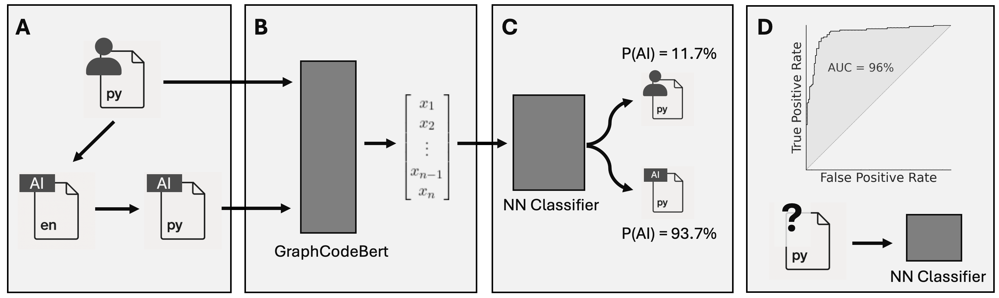
图1：将用Python编程语言编写的函数代码分类为人类或AI生成。A) 使用人类生成代码的集合，我们要求一个大语言模型用英语描述代码，然后另一个将该描述实现为Python函数。B) 我们使用GraphCodeBert对生成的代码进行向量化(vectorize)，这是一种嵌入(embedding)方法，使用代码的标记(tokens)、注释和变量图流。C) 我们训练一个神经网络分类器，将GraphCodeBert与分类头结合以预测人类/AI标签。D) 我们在样本外数据上评估分类器，并将其应用于大型未标记Python函数数据库。
然后我们在此数据集上训练一个机器学习分类器。遵循[[30]]，我们使用GraphCodeBert转换每个函数，这是一个用于代码的预训练语言模型，使用其标记、注释和变量的数据流图将函数嵌入到高维向量空间[[31]]。生成的向量被输入到分类器中，以确定给定函数是由人类还是由生成式AI编写的（图[1B-C]）。
该分类器表现出色，实现了0.96的样本外ROC AUC分数（图[S2D]）和0.95的平均真阳性率。我们将此分类器应用于从2019年初到2024年底从美国用户的全部人口和其他五个国家的抽样用户对Python项目的3100万次贡献中提取的500万个函数（图[1D]）。在材料和方法中，我们展示了该分类器也能正确识别在我们数据收集结束后引入的更新大语言模型生成的代码，以及在与大语言模型的真实世界交互中产生的代码，尽管准确性略低。在这些更新的大语言模型产生的代码上重新训练分类器进一步提高了性能。
图[2]，面板A绘制了美国开发者的AI采用轨迹。在主要AI进展之后，采用率急剧增加，包括Copilot、ChatGPT和第二代大语言模型的发布。面板B将美国与我们在全球AI采用竞赛中涵盖的其他五个主要国家进行比较。这表明美国取得了早期领先优势，并且此后一直保持这一优势。到2024年底，美国约29%的Python函数由AI生成，德国和法国紧随其后，为23/24%。印度以20%的比例接近，此前在采用方面曾落后。相比之下，俄罗斯和中国迄今仍是后期采用者。
专注于美国开发者的全部人口，我们发现AI采用率随着开发者在GitHub上活跃的年数而下降。图[3B]显示，最有经验的开发者在27%的代码中使用生成式AI，而刚加入GitHub平台的程序员在37%的代码中使用这些工具。相比之下，使用（自我报告的）基于名字的性别推断算法，我们发现男性和女性之间没有差异（图[3A]）。
B
图2：AI生成的Python函数随时间的份额。A：美国GitHub用户创建或实质性更改的Python函数份额。垂直线描绘95%置信区间。该图揭示了与关键AI相关事件同时发生的采用突变：GitHub Copilot预览版的发布、ChatGPT的公开发布以及第二波大语言模型发布（GPT4和相关模型）。B：中国、法国、德国、印度和俄罗斯的采用情况（注意在中国，GitHub与替代协作平台Gitee[[32]]竞争）。我们每个国家-年份抽样了2,000名随机程序员。美国曲线从面板
以美国作为参考点。美国引领了生成式AI(genAI)的早期采用，随后是法国和德国等欧洲国家。从2023年开始，印度迅速赶上，而中国和俄罗斯的采用进展较为缓慢。
为了评估生成式AI如何影响程序员生产的代码数量和性质，我们采用了带有用户和季度固定效应(fixed effects)的回归模型(regression models)。这比较了同一程序员在AI采用的不同时间点的输出——以季度提交次数(commits)衡量——同时控制了整体经济趋势。这些模型总结在图3C中，表明生成式AI对开发者生产力有显著影响。我们在不同类型的提交中发现了一致的效果：所有提交、修改多个文件的提交（通常需要处理脚本间的复杂依赖关系），以及添加新库或库组合的提交（通常为脚本引入新功能）。从0%到29%的生成式AI使用率——这是2024年底美国的估计采用率——与所有这些提交类型的提交率增加3.6%相关。然而，这些与用户生产力的关联完全由经验丰富的用户驱动，对他们而言，29%的采用率意味着提交率增加6.2%（图3D）。相比之下，我们在缺乏经验的用户中没有观察到统计上显著的效果。
除了提高活动率，AI采用还与对新库和库组合的实验增加相关，[[33]]将其解释为创新的迹象。由于库通常专注于特定类型的功能——如可视化、自然语言处理、网络交互或数据库操作——这表明生成式AI帮助程序员将能力扩展到软件开发的新领域。在2024年底美国开发者的平均AI使用率下，我们的模型预测开发者将实现2.7%更多的新库组合。结果对我们如何确定新库引入的变化具有稳健性(robust)。特别是，效果不太可能是由于生僻的库（“AI垃圾”）：如果我们只使用5000个最常见的库，或者先将库分组为124个粗略类别，研究结果不会有太大变化。此外，补充材料(SI)的图S6显示，这些效果以及早期的生产力效果可能是下限，因为用户AI采用率测量中的误差会使这些估计值向下偏倚。
[C]
[D]
图3：A) 从GitHub显示名称推断的按性别划分的生成式AI使用强度（美国，2024年）。B) 按用户任期(tenure)划分的生成式AI使用强度（美国，2024年）。C) 从带有用户和季度固定效应的用户-季度面板回归(panel regression)中估计的生成式AI使用对用户活动的影响。生成式AI使用与所有提交、处理项目相互依赖关系的多文件提交（“Multi-File”）以及添加库导入的提交（“Imports”，我们将其解释为添加新功能）的提交活动增加相关。生成式AI还与更广泛的单个库范围（“Indiv. Libs”）和库组合（“Combos”）以及对新库或组合的实验增加相关。结果在仅使用5000个最常见库组合（“Combos (Top 5k)”）和粗化库类别（“Combos (Groups)”）的子集上仍然成立。误差线：95%置信区间(confidence intervals)（按用户聚类的标准误差）。
我们着手在微观层面测量生成式AI的使用，以便在全球范围内研究其扩散及其后果。聚焦于软件开发劳动力，我们展示了生成式AI如何扩散以及这如何影响程序员生产的代码数量和性质。为此，我们开发了一个新的生成式AI分类器(classifier)来识别GitHub提交中AI生成的函数。应用于涵盖主要国家软件开发活动的大型数据集，我们记录了在关键生成式AI发布后不久，AI生成代码出现了显著的增长高峰。然而，我们也观察到国家之间的显著差异。证实现有研究[[8, 9]]，我们估计的采用率在经验较少的程序员中更高，但与大多数先前工作不同，我们发现男性和女性之间没有显著差异。
我们还发现生成式AI重塑了编程工作的数量和性质。使用开发者内部变异(within-developer variation)——比较同一程序员在采用生成式AI前后——我们表明AI采用显著增加了产出。使用生成式AI的开发者也更有可能将新颖的软件库组合纳入他们的代码中，这表明他们使用不熟悉的构建块[[34]]冒险进入新的技术领域[[33]]。然而，生产力和探索收益几乎完全集中在更有经验的开发者中。
我们的发现与先前的发现相比如何？我们对美国最近采用率约29%的估计与微软[1]和亚马逊[2]声称的编码工作采用率非常相似。这表明，尽管我们专注于开源Python库的代码，我们的结果与其他背景下的采用率估计密切一致，并可能推广到本研究特定设置之外。
与大多数其他研究不同，我们的设计允许我们比较各国的采用率。在这里，我们发现美国程序员有明确且持续的领先优势。在中国和俄罗斯等国家，大语言模型(LLMs)的使用可能较低，因为OpenAI和Anthropic等提供商阻止访问（供给侧），审查限制了本地使用（需求侧），尽管许多用户使用VPN连接[[35]]。然而，其他主要国家正在迅速赶上，侵蚀了美国的先发优势(first-mover advantage)。
我们研究的另一个独特之处在于，现有文献通常关注对生成式AI(genAI)的访问权限——产生所谓意向性治疗(intention-to-treat)因果效应的简化形式估计，
[2][https://www.nytimes.com/2025/05/25/business/amazon-ai-coders.html]
而非生成式AI本身的效应——或在受控实验环境中的使用情况。相比之下，我们的方法能够量化该技术在真实工作活动中的使用强度。最后，我们注意到，我们关于生成式AI使用的跨国证据补充了更广泛的AI采用的企业层面调查工作，这些工作可以追溯到生成式AI时代之前[[18]；]虽然水平不能直接比较，但两种视角都记录了AI使用方面持续存在的跨国差距。
关于生成式AI的生产力效应，我们的估计通常小于随机对照试验(RCTs)[[36,] [6]]和利用自然实验的研究[[22, 24]。]在稳健性检验中(补充材料第[S4]节)，我们研究了生成式AI采用收益中的非线性或阈值效应是否能解释这些差异，但几乎没有发现支持这一假设的显著证据。一个更有希望的解释是测量误差，这可能会使效应估计向下偏倚。与此一致的是，补充材料图[S6]显示，如果我们对测量误差进行校正，我们的效应估计会大幅增加。此外，我们表明效应集中在有经验的程序员身上，而初级开发人员似乎并未从生成式AI中获益太多。因此，先前文献中较高的效应估计也可能反映了他们所研究的人群和遵从者样本的差异。
我们的研究存在几个局限性。首先，我们的分析集中在软件开发上。尽管这限制了其范围，但该行业的工作特别适合进行定量分析，达到研究AI如何影响工作者及其任务所需的粒度水平。在软件领域内，我们只关注基于Python的开源贡献。虽然Python是一种广泛使用的语言，但在其他编程生态系统中，采用模式可能有所不同。我们认为，从GitHub上的开源Python代码得出的估计具有经济意义，因为开源软件(OSS)支撑着大多数商业技术栈，并具有巨大的可测量价值[[34, 37]。]GitHub在协作、网络和信号传递方面的核心作用进一步将我们的证据与专业活动联系起来[[38,] [39]。]最后，我们对美国AI使用的估计与上述美国领先企业报告的AI使用情况密切吻合，这增强了我们对研究结果外部效度的信心。
更广泛地说，我们也没有考虑同事之间的潜在外部性或企业间生产力的异质性(heterogeneity)，所有这些都可能是生成式AI如何影响编程活动的相关因素。在企业之外，我们的地理分析仅限于部分国家，扩大分析以包括不同收入水平的国家将是重要的。
在中国的具体情况下——那里的编程社区还依赖于另一个协作平台Gitee[[32]]——我们对GitHub项目的关注存在一些额外的风险，可能会扭曲估计。最后，关于生成式AI的效应，还有许多其他方法可以评估程序员的生产力，这些方法更加关注代码质量，从跟踪问题如何解决和代码合并到实施的测试覆盖率。虽然原则上可行，但这种分析需要新的数据收集和精心设计的指标。因此，我们将生成式AI对代码质量影响的问题留待未来研究。
生成式AI在编码中创造了多少价值？虽然很难给出确定的答案，但我们的研究提供了这个谜题的一些重要部分。基于对约900种不同职业的详细任务调查和工资统计的分析，我们估计美国每年在与编码活动相关的劳动力成本上花费6370亿至10630亿美元(补充材料第[S6]节)。假设我们估计的到2024年底29%的扩散率(diffusion rates)(基于开源Python贡献)代表了一般代码的情况，那么生成式AI编码助手在美国产生的年度价值将取决于它们提高生产力的程度。使用我们自己保守的基线估计，生成式AI将使提交量增加3.6%。假设这些提交反映了有价值的代码贡献，我们的计算表明生成式AI每年产生230亿至380亿美元的额外代码。这一估计将生产力增益视为在各种编程语言中相似。在更保守的情况下，如果Python之外的生产力效应可以忽略不计，使用Python在GitHub代码中所占份额的估计[[40]，]生成式AI的价值将降至该数字的约17%(大约40亿至60亿)。
相比之下，软件开发中的各种实验室实验[[21,] [36]]和现场实验[[6]]都产生了生成式AI对任务完成时间的更大因果效应——可以说这是比提交量更相关的跟踪量。对这些研究进行平均(详见材料和方法)，在29%的采用率下，估计生产力提高6.0%-15.7%，转化为生成式AI对美国编码活动直接影响的380亿至1670亿美元范围。然而，这些估计忽略了生成式AI也可能导致代码市场价格下降。因为这为代码消费者带来了成本节约，同时减少了供应商(即程序员)的利润，将这种一般均衡效应纳入考虑会进一步扩大可能结果的范围(补充材料第[S7]节)。在材料和方法部分，我们表明这主要会
影响我们估计的上限，而下限几乎不受影响。这些粗略计算的结论是，尽管生成式AI(genAI)对美国经济的总价值存在不确定性，但很可能是可观的，至少达到数百亿美元的量级。
鉴于生成式AI已经迅速扩散到美国以外的地区，即使我们仅限于软件行业，全球成本节约也会更大。此外，我们目前仍处于这项看起来是新通用技术(general purpose technology)[[3]]扩散曲线的早期阶段。从历史上看，通用技术早期阶段的生产力效应很难识别，因为需要时间将它们整合到企业层面的工作流程和程序中，培训个人并积累充分利用其潜力所需的互补资产(complementary assets)。基于此，在生成式AI的生产力效应方面，我们持乐观态度。
我们关于这些效应和生成式AI异质性扩散的研究结果为政策制定者和研究人员提出了重要问题。我们需要了解AI采用的障碍：这些障碍是否与之前的激进创新[[41]]相似，还是这次有所不同？此外，这些障碍不仅需要在个人层面理解，还需要在企业、区域和国家层面理解。我们的研究朝着回答这些问题迈出了第一步。
此外，鉴于程序员之间生产力的广泛差异[[42, 43, 44]]以及我们发现收益仅归于更有经验的编码者，未来的研究应该探索AI采用如何影响精英程序员上层的开发者活动，因为最重大的突破和创新可能发生在那里。最后，我们的研究专注于编程任务。然而，一项关于精英软件开发者的研究表明，获得生成式AI会导致从管理任务转向编码[[22]]，这表明生产力效应实现的一个重要边界是软件开发者工作任务组成的转变。
随着新技术的引入，工作的性质经常发生变化。当所讨论的创新是激进的[[41]]，如珍妮纺纱机、晶体管或机器人，同时又是普遍的[[45]]时，理解这些变化尤其困难。生成式AI对工作和劳动力市场影响的不确定性反映在研究人员和政策制定者对其采取的广泛态度中，从乌托邦式到怀疑甚至彻底的末日论。这些态度是在快速变化的背景下形成的，并且基于关于AI采用和效应的不完整证据。本研究的发现提供了更好的证据，说明生成式AI如何在经济中一个大型、重要且高度暴露的行业中使用，以及未来如何实时监测这一点。将我们的AI检测分类器应用于六年期间数百万次代码贡献，我们可以确认AI采用是快速的，但在国家和个人之间存在异质性。此外，AI采用与在线软件开发协作中活动率的增加相关。
然而，最令人惊讶的发现之一是生成式AI增加了对新库的实验，这表明生成式AI允许用户更快地进入新的编程领域，在他们的代码中嵌入新类型的功能。这证实了先前的发现[[46]]，即生成式AI增加了个人创新，在使用新库组合方面推动了个人能力。然而，同样只有经验丰富的用户似乎能够以这种方式利用生成式AI，这对程序员在生成式AI存在的情况下掌握新编码技能的能力具有重要影响。
我们感谢Ulrich Schetter、Hillary Vipond、Andrea Musso以及ANETI Brownbag研讨会的参与者提供的有益评论。我们感谢Márton Salamon提供的宝贵研究协助。
资助： F. N.、S.D.、J.W.和X.F.在复杂性科学(Complexity Science)资助计划内的ESSENCSE项目(873927)框架下获得了奥地利研究促进局(FFG)的财政支持。JW还感谢匈牙利国家科学基金(OTKA FK 145960)的财政支持。
作者贡献： S.D.和F.N.构思了研究。S.D.实施了主要方法。S.D.和J.W.收集了数据。X.F.收集了数据并估算了美国编程相关工资总额的规模。所有作者分析了数据。F.N.和J.W.主导了稿件起草。所有作者都为稿件撰写做出了贡献。
利益冲突： 无需声明的利益冲突。
数据和材料可用性： 复制我们分析的代码和数据可在此处获得：此链接
谁在使用AI编码？
生成式AI的全球扩散和影响
Simone Daniotti[∗]、Johannes Wachs、Xiangnan Feng、Frank Neffke
本PDF文件包括：
材料和方法
补充文本
图S1至S9
表S1至S28
复制本文结果的数据和代码可在此链接获得。数据集包含以下列：匿名用户ID、匿名修改函数ID、匿名项目名称、匿名提交ID、估计的(校正的，见第S1.3节)AI概率以及用户自报的国家。
我们的数据收集过程如下。首先，我们使用托管在 Google BigQuery 上的 GHArchive 数据集收集所有在 GitHub 公共仓库(repositories)中提交过代码的用户，重点关注 2019-2024 年期间。然后，我们使用通过 GraphQL API [[47]] 从 GitHub 个人资料中获取的自报位置对 GitHub 用户进行地理定位(geolocate)。补充材料(SI)的图 [S1] 显示，从自报数据得出的用户跨国家分布与 GitHub Innovation Graph 数据集 (https://innovationgraph.github.com/) 提供的基于用户 IP 地址得出的分布非常接近。
接下来，我们收集报告美国位置的用户对使用 Python 作为编程语言的项目的提交。为此，我们选择在给定年份中活跃于此类项目的所有用户。然后，在每一年中，我们递归克隆与这些用户相关的所有 GitHub 目录，并获取用户在该年度提交超过 3 次的项目的所有提交。最后，我们使用 PyDriller 工具 [[48]] 分析这些提交。为了管理计算开销，图 [2B] 中其他五个国家的 AI 使用情况基于随机样本。我们从以类似于美国的方式创建的人群中抽取这些样本。从每个人群中，我们每年每个国家抽样 2,000 名程序员。这产生了总共 70,000 个用户年观察值。
A [B]
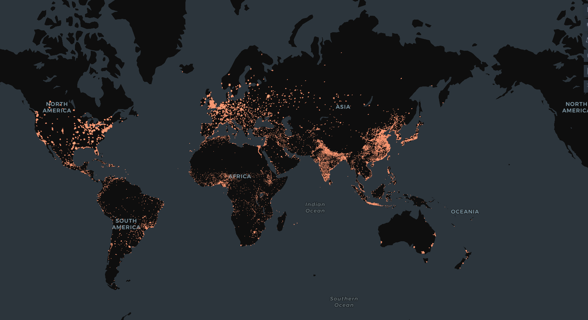
图 S1：GitHub 用户的位置。A：GitHub 用户的自报位置。B：基于自报位置与 IP 地址的每个国家用户数量对比。
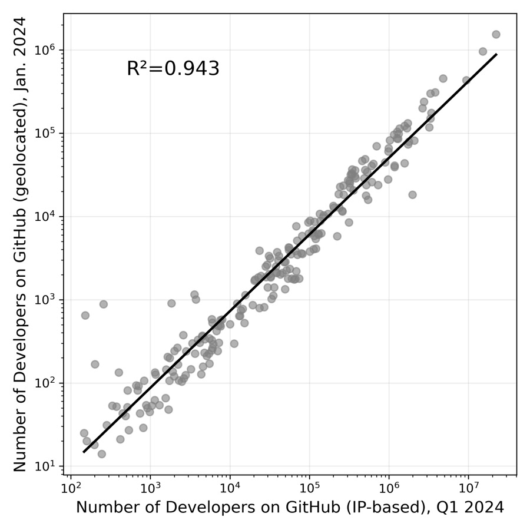
为了检测 genAI 的使用，我们专注于执行明确定义任务的自包含代码块：函数(functions)。对于每个函数，我们确定在一次提交中修改了多少行。然后我们只保留那些超过 80% 代码行发生修改的函数。
我们用于训练监督模型以检测 AI 生成的 Python 函数的真实数据(ground truth data)结合了多个来源。我们首先从三个不同的数据集中收集由人类编码者创建的函数。第一个数据集从 GitHub 随机抽样在 genAI 编码工具引入之前创建的 Python 函数。特别是，我们抽样 2018 年创建的 python 函数。第二个和第三个数据集是 HumanEval [[49]] 和 HumanEval-X [[50]]，这两个数据集最初都是为了评估和测量代码的功能正确性而创建的。这三个数据集合计包含近 4,000 个人类编写的 Python 函数。添加后两个数据集确保我们用于训练模型的人类制作的 Python 函数包括在不同年份创建的示例，包括 genAI 工具变得更广泛可用的年份。接下来，受 [[29]] 启发，我们使用 GPT3.5-turbo (50%)、GPT-4o-mini (30%) 和 GPT-4 (20%) 生成由不同 LLM 编写的 Python 函数的合成数据集。为此，我们使用结合两个 LLM 的 LLM 链创建上述人类编写函数的合成克隆，模仿最近的 LLM Agent 工具。每个 LLM 执行不同的任务。第一个 LLM 被提示根据给定人类制作函数的功能以及所需输入和生成输出的结构来描述它。第二个 LLM 被要求阅读此描述，然后生成完成相同任务的函数。确切的提示(prompts)和输出示例列在补充材料的表 [S1] 中。训练集的总大小约为 8,000 个函数。
我们的 genAI 检测模型依赖于开源组件，并设置为高效扩展以分析数百万个 Python 函数。我们选择了基于 CodeBERT [[51]] 的最先进技术。我们的方法类似于 GPTSniffer [[30]]。在该论文中，作者训练 CodeBERT 模型来检测 AI 编写的 Javascript 程序。我们的目标是检测 AI 编写的 Python 函数。为此，我们在更新和更高级的版本 GraphCodeBERT [[31]] 之上构建分类器(classifier)，它能够更好地捕获和理解代码中的模式。我们在 GraphCodeBERT 模型中添加一个线性层来执行分类任务。最后，我们使用训练数据微调(finetune)所有参数以获得最佳模型预测，包括重新训练嵌入权重(embedding weights)以优化结果。
使用 GraphCodeBERT 的分词器(tokenizer)进行分词，设置最大序列长度为 512，并应用填充(padding)和截断(truncation)以保持输入的一致性。作为损失函数(loss function)，我们使用交叉熵损失(cross-entropy loss) (torch.nn.CrossEntropyLoss)，它非常适合分类问题，并且通常用于基于 RoBERTa 的分类模型。如图 [S2] 所示，在我们的案例中，它学会有效区分 AI 生成的代码和人类编写的代码。由于模型返回原始 logit 值，模型内部应用 softmax 操作，将预测的概率分布与真实标签进行比较。
为了训练模型，我们使用固定的随机种子以 80/20 的比例将真实数据分为训练集和评估集。然后我们使用 Hugging Face Trainer API 来处理训练、评估和优化。我们的训练配置包括 10 个 epoch，每个设备的批量大小(batch size)为 32（用于训练和评估），以及 AdamW 优化器(optimizer) (adamw hf)，学习率(learning rate)为 1e-5，权重衰减(weight decay)为 0.005。我们设置 warmup steps=1000 以帮助在早期阶段稳定学习。日志记录每 100 步进行一次，评估和模型检查点(check-pointing)
在每个轮次(epoch)中。最终，只保留在评估集上表现最好的模型。为了可重复性(reproducibility)，我们使用固定的数据种子(seed 365)。如图S2所示，该模型能够有效识别我们真实数据中的AI生成代码，达到样本外ROC AUC得分0.96，平均精度得分(Average Precision Score)[52]为0.9685，平均真阳性率(true positive rate)为0.95（F1得分0.8911，阈值为0.5）。
角色 提示词
系统 你是一位Python专家程序员。
用户（生成描述） 这是一个markdown格式的Python脚本。描述该脚本正在解决的任务，解释每个函数的输入和输出规范。
用户（从描述生成代码） 这是一个Python脚本的描述。根据描述，编写完整的代码来完成该任务。Python脚本应组织在单个markdown块中。请只返回代码，不要在代码前后返回任何说明。
表S1：合成数据集生成的系统和用户提示词。
在图2和回归分析中，我们通过量化一段代码由AI编写的概率来研究生成式AI(genAI)的扩散和影响：𝑃(𝐴 = 1)。我们的数据允许我们估计一个
D
图S2：检测器预测测试。 在测试集上对训练好的检测器进行评估。A：人类生成函数被预测为AI生成的概率。B：AI生成函数被预测为AI生成的概率。C：检测模型训练期间的损失曲线。D：分类器的ROC曲线。
不同的概率：我们的模型检测到函数中使用AI的概率：𝑃(𝐷 = 1)。使用全概率定律(law of total probability)，我们可以将后者的概率写为：
𝑃(𝐷 = 1) = 𝑃(𝐷 = 1 | 𝐴 = 1)𝑃(𝐴 = 1) + 𝑃(𝐷 = 1 | 𝐴 = 0)𝑃(𝐴 = 0) (S1)
或
𝑃(𝐷 = 1) = 𝑃(𝐷 = 1 | 𝐴 = 1)𝑃(𝐴 = 1) + 𝑃(𝐷 = 1 | 𝐴 = 0)(1 − 𝑃(𝐴 = 1))
我们可以使用真实数据集估计其中一些项：
• 𝑃(𝐷 = 1| 𝐴 = 1)：ˆ𝑑[𝐴𝐼][𝐺𝑇]，AI生成的代码在真实数据中被检测为AI的估计概率（真阳性率）
• 𝑃(𝐷 = 1| 𝐴 = 0)：ˆ𝑑[ℎ𝑢𝑚][𝐺𝑇]，人类编写的代码在真实数据中被检测为AI的估计概率（假阳性率）
• 𝑃(𝐷 = 1)：ˆ𝑑，AI检测的估计概率（观测量）
• 𝑃(𝐴 = 1)：ˆ𝑦，估计的AI使用率（关注量）
使用这种表示法，我们可以写出方程(S1)：
ˆ𝑑 = ˆ𝑑[𝐴𝐼][𝐺𝑇]ˆ𝑦 + ˆ𝑑[ℎ𝑢𝑚][𝐺𝑇](1 − ˆ𝑦)
ˆ𝑑 = ˆ𝑑[𝐴𝐼][𝐺𝑇]ˆ𝑦 − ˆ𝑑[ℎ𝑢𝑚][𝐺𝑇]ˆ𝑦 + ˆ𝑑[ℎ𝑢𝑚][𝐺𝑇]
并重新排列项得到：
ˆ𝑦 = (ˆ𝑑 − ˆ𝑑[ℎ𝑢𝑚][𝐺𝑇]) / (ˆ𝑑[𝐴𝐼][𝐺𝑇] − ˆ𝑑[ℎ𝑢𝑚][𝐺𝑇]) (S2)
我们可以使用这个方程来校正AI检测器估计的AI采用概率中的误分类错误。我们在整篇论文中使用这个量作为给定函数样本中估计的AI采用率。在此过程中，我们允许真阳性率和假阳性率在不同国家之间存在差异，使用特定国家的校正参数ˆ𝑑[𝐴𝐼][𝐺𝑇]和ˆ𝑑[ℎ𝑢𝑚][𝐺𝑇]。如表S2所示，这些差异实际上是适度的，在假阳性率中最为明显。
国家 假阳性率 真阳性率
美国 0.2321 0.9550 中国 0.2405 0.9521 德国 0.2397 0.9516 印度 0.2296 0.9520 俄罗斯 0.2572 0.9617 法国 0.1989 0.9519
表S2：特定国家的假阳性率ˆ𝑑[hum][GT]和真阳性率ˆ𝑑[𝐴𝐼][𝐺𝑇]的估计值。
方程(S2)中描述的校正的一个结果是，采用率不必严格为正。例如，这在图2中校正后使用率的置信区间中可见，在生成式AI编码工具广泛可用之前的时期，所有国家的置信区间都以零为中心。
在这里，我们探讨人类编码风格是否影响AI检测的准确性，重点关注冗余度(verbosity)。如果AI检测器将冗余的人类代码误分类为AI生成，我们评估冗余度或模板化程度(templatedness)是否能预测人类编写函数中的假阳性。
为了衡量Python函数的冗余度，我们使用了软件工程文献中关于可读性和代码风格的常见个体特征：平均行长度、空行比率、注释比率、文档字符串长度和标记计数(token count)。这些捕获了代码冗余度的布局、文档和大小维度[53, 54]。我们构建了两个复合度量。第一个是复合冗余度(Composite Verbosity)，对行长度、空行比率、注释比率和文档字符串长度的标准化值取平均，捕获风格和文档冗余度。第二个是复合冗余度+大小(Composite Verbosity + Size)，在这些组件中添加标准化的标记计数，以将整体代码长度与风格和文档结合起来。模板化程度表示重复性或样板结构，测量为1减去归一化标记熵(token entropy)，遵循”软件自然性”文献[55]。
变量 Spearman 𝜌 t统计量 p值平均行长度 -0.017 -0.526 0.599 空行比率 -0.017 -0.527 0.599 注释比率 -0.006 -0.186 0.852 文档字符串长度 -0.141 -4.515 < 0.001 标记数量 0.109 3.452 < 0.001 复合冗余度 -0.042 -1.326 0.185 复合冗余度+大小 -0.010 -0.309 0.757 模板化程度 0.051 1.619 0.106
表S3：Spearman相关性和相关检验统计量，衡量人类编写代码的冗余度度量与代码被错误分类为AI编写之间的关系。
我们对1,000个随机选择的样本外人类编写的Python函数进行了两项分析。我们分析了这些函数被错误分类为AI编写的可能性（假阳性/FP）。
与分类器假阳性的相关性（人类代码被分类为AI）。 在1,000个人类函数中，没有任何单独的冗余特征与FP状态强相关。最大的绝对Spearman相关性是文档字符串长度的-0.14（文档更完善的代码FP更少）。Token计数显示出轻微的正相关（𝜌 = 0.11），模板化程度呈弱正相关（𝜌 = 0.05）。复合冗余指数接近零（复合冗余：𝜌 = −0.04；复合冗余+大小：𝜌 = −0.01）。总体而言，冗余度与假阳性率没有系统性关联。我们在表S3中报告了相关性和p值。
[30] [复合冗余度 (VS)] [复合冗余度 + 大小 (VC)] [模板化程度]
[25]
[20]
[15]
[10]
[假阳性率 (%)] [假阳性率 (%)] [假阳性率 (%)]
[5]
[0]
[1 2 3 4 5 6 7 8 9 10] [1 2 3 4 5 6 7 8 9 10] [1 2 3 4 5 6 7 8 9 10]
[十分位数] [十分位数] [十分位数]
图S3：代码冗余度（以三种方式操作化）与人类编写的函数被错误分类为AI编写的可能性之间的关系。我们将冗余度分数分为十分位数，并绘制了带有自举置信区间的平均假阳性率。我们发现代码冗余度与假阳性之间没有一致的关系。
按冗余度十分位数的假阳性。 当人类函数按冗余度分组时，FP率在10%左右波动，没有单调趋势，见图S3。这种模式表明，在被错误分类为AI编写的人类编写函数中，代码冗余度存在随机变化而非系统性偏差。
S1.5 生成式AI编程助手产生的价值
在讨论部分，我们提供了生成式AI在美国编程活动中货币价值的粗略计算。这些计算基于我们的估计：到2024年底，美国开发者28.6%的函数由生成式AI生成。请注意，我们在正文中将估计值报告为29%，但所有计算都使用更精确的28.6%估计值。基于我们对生成式AI对提交量(commit volumes)影响的基线保守点估计0.122，29%的使用率将转化为𝑒^(0.122×0.286) − 1 = 3.55% ≈ 3.6%的总体增长。然后我们分析了约900种不同职业的详细任务调查和工资统计数据。结果显示，美国每年在编程相关劳动力成本上的支出估计在637至1,063亿美元之间（SI，第S6节）。
如果我们愿意假设：(1)我们估计的生产力效应（基于开源Python贡献）代表了一般代码的情况，(2)提交量的相关增长准确反映了对编码人员劳动生产率的潜在因果效应——包括更多提交转化为更有价值的代码——我们得出美国编程工作生产力增长的总价值为每年230至380亿美元。相反，如果Python之外的生产力效应可以忽略不计，生成式AI的价值可能低至我们上述最保守估计的17%[[40]]（即32至53亿美元）。然而，我们不仅认为这不太可能，而且在缺乏额外信息的情况下，这也会违背我们在上面隐含采取的最大无知立场(maximum-ignorance stance)。
尽管控制了观察到的和未观察到的用户特征，我们的估计设计并未针对识别因果效应进行优化。此外，我们无法解释生成式AI使用在工作者之间的任何溢出效应(spillover effects)。事实上，我们的估计几乎肯定低估了生成式AI在软件开发中的全部经济影响。追踪开发者在实际代码库中的现场实验报告显示，提交量增加了约13.6%，任务完成速度提高了26%[[6]]。利用GitHub Copilot分阶段推出的自然实验发现，访问Copilot导致合并的拉取请求增加6%[[24]]，提交量增加5.5%[[22]]。在实验室实验中，能够访问生成式AI的受试者完成软件任务的速度快21-55%，假设AI使用率为28.6%，这转化为6.0%-15.7%的效应[[21, 36]]。将来自随机对照试验(RCTs)的三个任务完成时间改进估计的平均值（55%[[21]]，21%[[36]]和26%[[6]]）与我们估计的28.6% AI使用率相结合，将意味着9.7%的效应和每年620至1,030亿美元的价值。相反，依赖一个RCT和两个自然实验中提交量和合并拉取请求率的平均增长（13.6%[[6]]，5.5%[[22]]和5.6%[[24]]）与估计的AI使用率，得出生产力增长2.35%或每年150至250亿美元的价值。
然而，请注意，这些估计都没有考虑一般均衡效应(general equilibrium effects)。如果生成式AI提高了工作者的产出，代码的价格将下降，从而为其消费者节省成本。这反过来又增加了对代码的需求。在SI第S7节中，我们表明，根据人们愿意做出的关于弹性(elasticities)和市场条件的确切假设，基于我们自己的效应估计，总福利效应可能在210至1,260亿美元之间，如果效应更接近实验室和现场实验中报告的效应，则可能获得更大的收益。然而，这些估计的上限指的是代码供应完全弹性的极端情况。这不切实际地假设价格下降现在使消费者在他们消费的整个代码量中受益，但完全不会损害这些代码的生产者。相比之下，（同样不太可能的）下限非常接近我们最初未调整一般均衡效应的估计。
均衡效应(equilibrium effects)。因此，这些初步估计可以被认为是保守的，在长期来看也是如此。
为了评估我们的检测器在真实世界代码中识别genAI使用情况的能力，我们依赖于WildChat数据库[[56]]中记录的与LLMs的对话。WildChat包含100万个真实世界的用户-AI对话。我们专注于包含Python函数的对话，提取了21k个与GPT-3.5-turbo交互的函数和12k个与GPT-4交互的函数。
图[S4]展示了我们的检测器识别这些函数为AI生成的效果，使用每个LLM的5,000个函数的随机样本。我们研究了在两种不同条件下创建的函数。首先，我们使用在与LLMs的第一轮交互中生成的函数样本，称为”合成”函数。接下来，我们使用在与LLMs的后续交互轮次中生成的函数样本。我们将这些函数称为”辅助”函数。真阳性的平均概率在各样本中非常相似，约为0.7（GPT-3.5 turbo — 合成：0.701，辅助：0.698；GPT-4 — 合成：0.675，辅助：0.651）。这表明，尽管AI检测器在真实世界用户创建的AI生成代码上的可靠性稍低，但它不受用户与LLM交互多少来生成代码的影响。
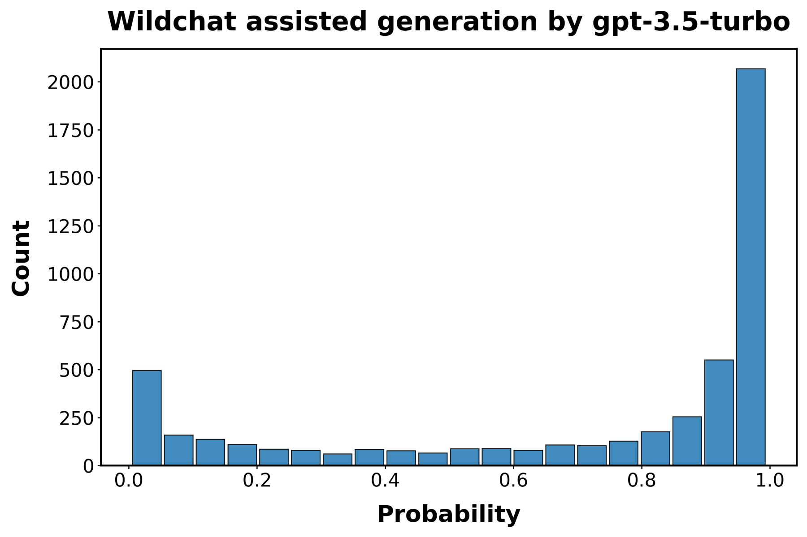
[C] [D]
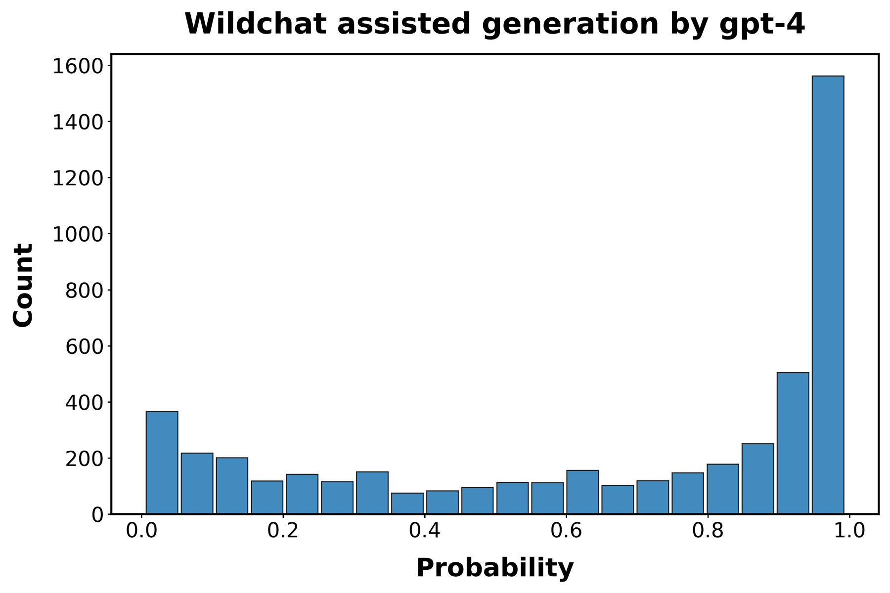
图S4：WildChat函数中的AI检测。面板显示了最初由LLMs创建的函数被检测为AI生成的概率直方图。
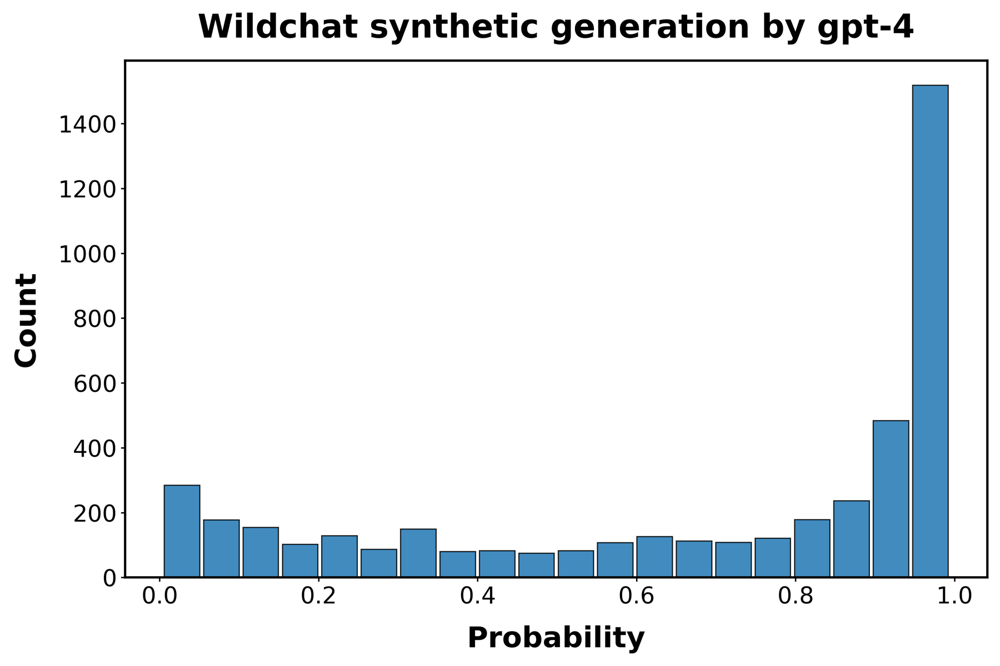
函数取自人类编码者与GPT-3.5 turbo（面板A和B）和GPT-4（面板C和D）的交互，
这些交互收集在WildChat数据集中。“合成”代码（面板A和C）指的是在每次交互开始时LLM的初始响应中生成的代码。“辅助代码”指的是在人类编码者与LLM之间的后续交互轮次中生成的代码。
由于我们的数据收集在2024年结束，已经推出了更新的LLMs。在这里，我们测试了我们的检测模型在由四个这样的模型创建的代码上的性能：OpenAI的GPT-4.1、Anthropic的Claude Sonnet 4和Deepseek-V3。我们还测试了该模型在OpenAI的o3（一个推理模型(reasoning model)）生成的代码上的表现。为此，我们重现了图[1]中描述的程序，为GPT-4.1和o3生成了额外的1,000个合成函数，为Claude Sonnet 4和Deepseek-V3生成了500个。然后我们测试检测器识别这些函数为AI生成的能力。
[C] [D]
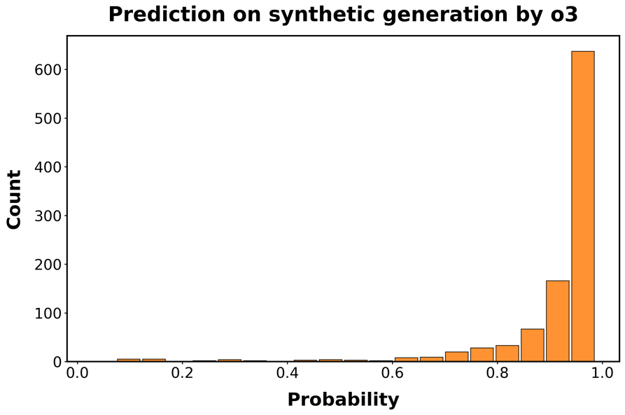
[E] [F]
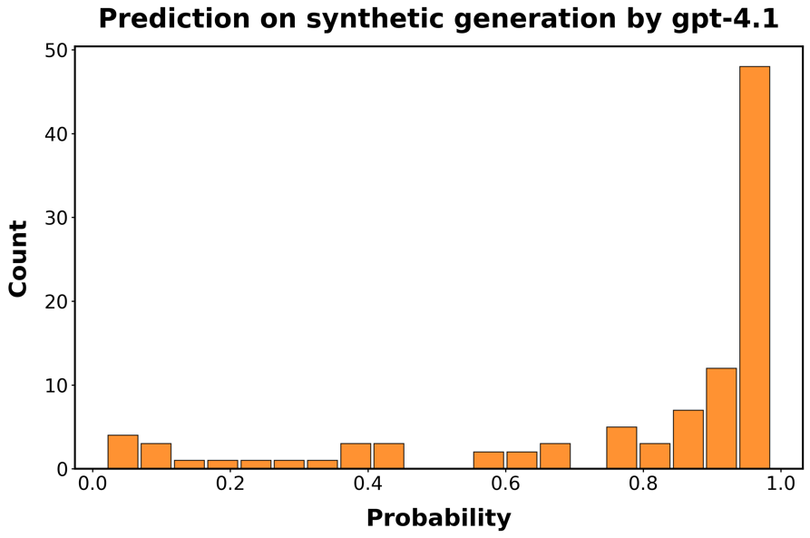
[G] [H]

图S5：分类器在最新LLMs生成的代码上的性能。每个面板显示分类器正确识别函数为AI生成的预测概率的直方图。
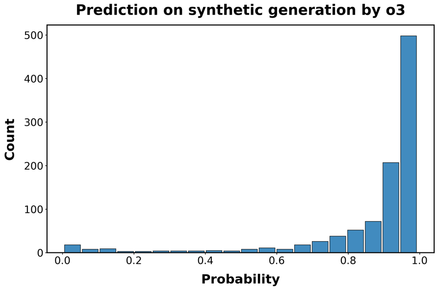
行对应用于生成函数的LLM：A/B：GPT-4.1；C/D GPT-o3；E/F：
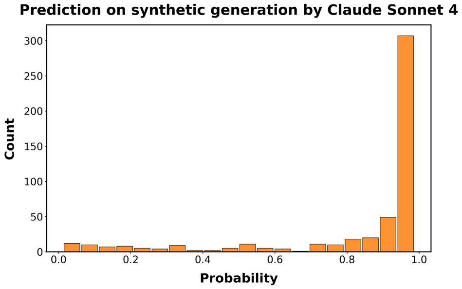
Claude Sonnet 4；G/H：DeepSeek-V3。左侧面板对应未重新训练分类器的预测概率；
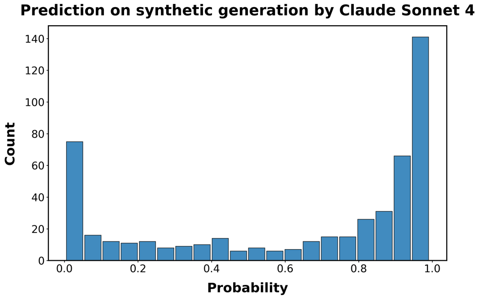
右侧面板基于重新训练的分类器，该分类器使用了额外500个Claude和Deepseek生成函数的训练样本。
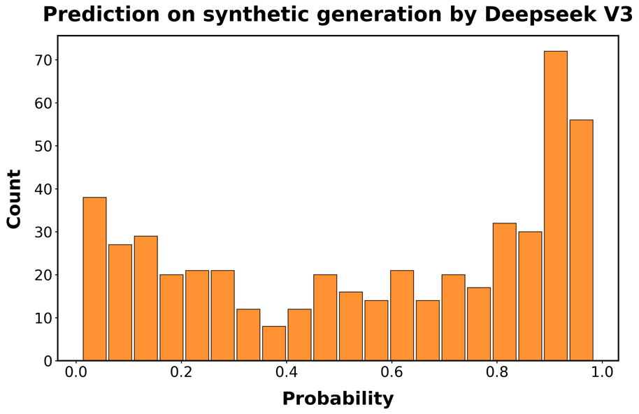
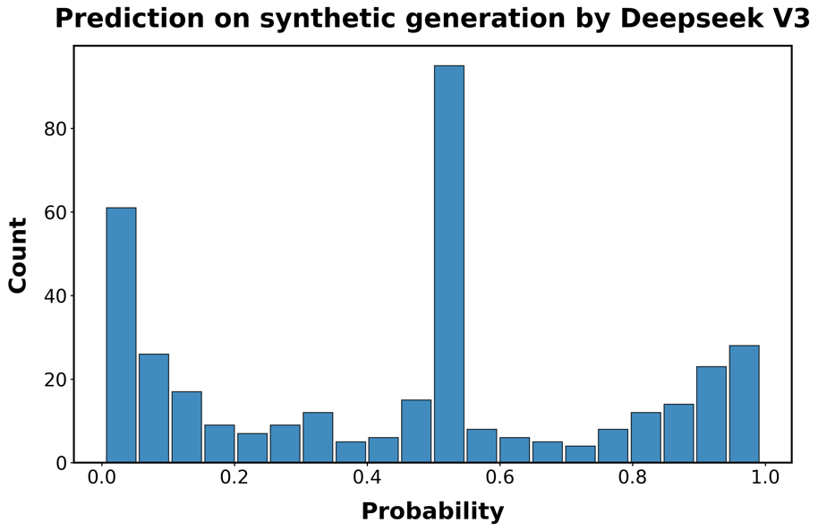
结果呈现在图[S5]中。检测模型仍然具有预测性，特别是对于较新的OpenAI模型，但在区分人类代码和由Claude或DeepSeek生成的代码方面存在困难。因此，我们向训练集添加了500个DeepSeek和Claude生成函数的示例，并重新训练模型。在o3的情况下，性能接近我们在初始合成函数样本中观察到的0.95的真阳性平均概率。
表[S4]显示，添加这一适量的示例函数已经大幅提高了检测性能，即使对于未用于创建额外训练数据的模型也是如此。因此，我们预计通过扩展训练集，至少在不久的将来，随着genAI技术的改进，我们可能能够保持检测器的性能。
模型 训练前 训练后 DeepSeek-V3 0.452 0.561 Claude-Sonnet-4 0.630 0.831 o3 0.867 0.910 GPT-4.1 0.763 0.781
表S4：训练前后真阳性的平均概率。
在图[2]中，我们展示了软件开发领域六个主要国家的genAI采用率及其95%置信区间。为了评估这些采用轨迹在这些国家之间的显著差异程度，我们首先将数据聚合到国家-年份级别。接下来，我们运行双侧均值相等t检验，在每年比较所有国家。结果总结在表[S6]中。在每个单元格中，表格列出了相关国家对比较的p值。低于0.01的p值以粗体显示。此外，每当行国家的采用率超过列国家时，p值显示为绿色。否则——当列国家领先于行国家时——p值显示为红色并放在括号中。
为了估计AI采用对用户编码输出的影响以及AI之间的关联
采用率和人口统计变量，我们首先需要确定给定用户在给定时间点的采用率。我们关注美国用户，并剔除那些提交频率不合理的用户，即总共推送超过10k次提交或在单个季度内推送超过2k次提交的用户，因为这些可能是机器人或自动化账户。接下来，我们计算AI检测算法的平均分数——通过应用公式[(S2)]进行校正——对用户在每个给定季度产生的所有函数进行计算。这产生了一个用户-季度级别的数据集(dataset)，描述了100,097个用户在平均5.1个季度时间跨度内的AI使用率。当这些平均值基于少于10个函数时，观测值设置为缺失。原则上，也可以通过在非缺失观测值之间进行插值来减少缺失观测值的数量。然而，这有使用未来季度信息的风险。为避免这种情况，我们改为最多向前填充2个季度的值。也就是说，我们假设——在没有进一步信息的情况下——AI采用率保持恒定，至少在有限的时间内如此。
表S5：AI采用率差异的成对p值
[2019] [中国] [法国] [德国] [印度] [俄罗斯] [美国] [中国] [–] [(0.647)] [(0.471)] [(0.925)] [(0.333)] [(0.509)] [法国] [0.647] [–] [(0.965)] [0.682] [(0.778)] [0.856] [德国] [0.471] [0.965] [–] [0.505] [(0.753)] [0.700] [印度] [0.925] [(0.682)] [(0.505)] [–] [(0.355)] [(0.552)] [俄罗斯] [0.333] [0.778] [0.753] [0.355] [–] [0.472] [美国] [0.509] [(0.856)] [(0.700)] [0.552] [(0.472)] [–]
[2020] [中国] [法国] [德国] [印度] [俄罗斯] [美国] [中国] [–] [0.196] [0.000] [0.217] [0.104] [0.029] [法国] [(0.196)] [–] [0.000] [0.935] [0.501] [0.192] [德国] [(][0.000][)] [(][0.000][)] [–] [(][0.000][)] [(][0.000][)] [(][0.000][)] [印度] [(0.217)] [(0.935)] [0.000] [–] [0.592] [0.401] [俄罗斯] [(0.104)] [(0.501)] [0.000] [(0.592)] [–] [0.987] [美国] [(0.029)] [(0.192)] [0.000] [(0.401)] [(0.987)] [–]
[2021] [中国] [法国] [德国] [印度] [俄罗斯] [美国] [中国] [–] [(0.395)] [(0.261)] [(0.170)] [(0.533)] [(0.088)] [法国] [0.395] [–] [(0.919)] [(0.808)] [0.764] [(0.839)] [德国] [0.261] [0.919] [–] [(0.870)] [0.640] [(0.919)] [印度] [0.170] [0.808] [0.870] [–] [0.511] [0.894] [俄罗斯] [0.533] [(0.764)] [(0.640)] [(0.511)] [–] [(0.458)] [美国] [0.088] [0.839] [0.919] [(0.894)] [0.458] [–] [2022] [中国] [法国] [德国] [印度] [俄罗斯] [美国] [中国] [–] [0.000] [0.000] [0.000] [0.001] [(][0.000][)] [法国] [(][0.000][)] [–] [(0.129)] [0.154] [(0.012)] [(][0.000][)] [德国] [(][0.000][)] [0.129] [–] [0.008] [(0.421)] [(][0.000][)] [印度] [(][0.000][)] [(0.154)] [(][0.008][)] [–] [(][0.000][)] [(][0.000][)] [俄罗斯] [(][0.001][)] [0.012] [0.421] [0.000] [–] [(][0.000][)] [美国] [0.000] [0.000] [0.000] [0.000] [0.000] [–] [2023] [中国] [法国] [德国] [印度] [俄罗斯] [美国] [中国] [–] [(][0.000][)] [(][0.000][)] [(0.944)] [(][0.000][)] [(][0.000][)] [法国] [0.000] [–] [(][0.001][)] [0.001] [(][0.000][)] [(][0.000][)] [德国] [0.000] [0.001] [–] [0.000] [0.937] [(][0.000][)] [印度] [0.944] [(][0.001][)] [(][0.000][)] [–] [(][0.000][)] [(][0.000][)] [俄罗斯] [0.000] [0.000] [(0.937)] [0.000] [–] [(][0.000][)] [美国] [0.000] [0.000] [0.000] [0.000] [0.000] [–] [2024] [中国] [法国] [德国] [印度] [俄罗斯] [美国] [中国] [–] [(][0.000][)] [(][0.000][)] [(][0.000][)] [(][0.000][)] [(][0.000][)] [法国] [0.000] [–] [(0.852)] [0.000] [0.000] [(][0.000][)] [德国] [0.000] [0.852] [–] [0.000] [0.000] [(][0.000][)] [印度] [0.000] [(][0.000][)] [(][0.000][)] [–] [0.000] [(][0.000][)] [俄罗斯] [0.000] [(][0.000][)] [(][0.000][)] [(][0.000][)] [–] [(][0.000][)] [美国] [0.000] [0.000] [0.000] [0.000] [0.000] [–]
表S6：平均采用率比较：t检验。该表报告了t检验的p值，比较了2019年至2024年间行国家与列国家的平均genAI采用率。当这些差异在1%水平上具有统计显著性时，p值以粗体显示。绿色表示行国家在genAI采用方面领先于列国家的年份，红色表示相反情况。在后一种情况下，p值放在括号中。
为了确定AI采用对GitHub用户产生的产出数量和性质的影响，我们在用户-季度级别数据集中添加了关于用户产生的提交量和类型的信息，以及他们在这些提交中使用的库。我们使用固定效应模型(fixed effects models)分析genAI采用对这些变量的影响。也就是说，我们估计具有用户和季度固定效应𝜌[𝑢]和𝜏[𝑞]的普通最小二乘模型(OLS)。这使我们能够通过比较同一用户内AI采用变化时产出如何变化来估计genAI的影响，保持不随时间变化的用户特征恒定，同时控制影响给定季度所有用户的长期变化。
我们的主要关注变量𝐴𝐼[𝑢𝑞]衡量用户𝑢在季度𝑞中由genAI产生的函数的估计份额，即我们的genAI分类器(classifier)对该季度函数的平均预测。因为检测genAI需要我们观察函数——这反过来需要
提交活动(commit activity)——我们在提交被计数之前的季度测量AI采用率(adoption rates)。
换句话说，我们的主要规范(specification)使用滞后一个季度的AI采用测量。这避免了观察到的AI采用与基于提交的变量之间的机械关系。也就是说，我们估计：
𝑦[𝑢 𝑞] = 𝛽[𝐴 𝐼] 𝐴𝐼[𝑢 𝑞][−][1] + 𝜌[𝑢] + 𝜏[𝑞] + 𝜀[𝑢 𝑞] (S3)
其中 𝑦[𝑢 𝑞] 是我们的因变量之一。最后，为了确定我们估计的精度，我们使用按单个用户聚类的标准误差(standard errors)，允许个体内部的误差相关性。
我们针对两类因变量估计这些模型。第一类测量用户的活动率，以他们每季度推送的提交数量为单位。我们创建三种类型的提交计数。第一种，𝑁[all][𝑢 𝑞]，计算用户在一个季度内的所有提交。第二种，𝑁[mult][𝑢 𝑞]，计算对项目中多个文件（脚本）进行更改的提交。对于这些提交，它们更可能需要处理项目级依赖关系，原则上使它们更复杂。第三种，𝑁[imp][𝑢 𝑞]，计算向脚本添加库导入(library imports)的提交。库(Libraries)是（通常）由其他开发者编写的开源软件模块，用户在自己的脚本中”导入”它们来使用。这些库被认为是现代软件开发的构建块[[34]。]可以推测，这些提交更可能改变脚本中的主要功能，并且更具实质性。
我们研究用户活动的第二种方式旨在通过跟踪用户在其脚本中导入的软件库类型来量化用户生成代码性质的变化。其理由是，不同的库促进不同类型的功能，揭示脚本所属的广泛编程领域的信息。因此，库，特别是程序员使用的库组合，提供了用户正在处理何种程序的粗略指示。如果我们观察到用户开始使用新的库或库组合，我们将其解释为用户正在尝试新类型代码的迹象。这与先前将脚本中的新库组合解释为创新迹象的工作一致[[33]。]
我们研究用户提交历史中两大类库使用情况。
• 𝐿[all][𝑢 𝑞]：用户在给定季度内所有提交中添加的唯一库的数量
• 𝐿[entry][𝑢 𝑞]：用户在该季度添加的、在同一用户之前任何季度都未使用过的唯一库的数量
为了初始化后者，我们删除每个用户的第一年观察数据，以评估对用户而言是新的库使用情况。我们还生成 𝐶[all][𝑢 𝑞] 和 𝐶[entry][𝑢 𝑞]，它们计算提交级别的库组合（即，在单个提交中添加的库集合），而不是用户的单个库使用或进入。最后，我们创建变量 𝑃[all][𝑢 𝑞] 和 𝑃[entry][𝑢 𝑞]，它们计算新库对的使用和进入，即用于生成 𝐶[𝑢 𝑞] 变量的提交级别库集合中库的任何成对组合。
最后，为了检查这些结果的稳健性(robustness)，我们测试了构建这些基于库的变量的两个进一步变化。首先，如果生成式AI(genAI)添加了非典型且很少使用的库（所谓的”AI垃圾”），这可能会影响对用户新进入的分析。为了缓解这一问题，我们仅使用5,000个最常用的库重新运行所有分析。其次，并非所有库都会从根本上改变用户工作的代码领域。因此，我们还测试了如果使用聚合的、粗化的库类别而不是库本身会发生什么，如第[S5]节所述。这产生了以下一组因变量：
• 仅5,000个最常用库：
– 库：𝐿[all,5k][𝑢 𝑞]，𝐿[entry,5k][𝑢 𝑞]；
– 库组合：𝐶[all,5k][𝑢 𝑞]，𝐶[entry,5k][𝑢 𝑞]；
– 库对：𝑃[all,5k][𝑢 𝑞]，𝑃[entry,5k][𝑢 𝑞]
• 粗化的库类别：
– 类别：𝐿[all,cat][𝑢 𝑞]，𝐿[entry,cat][𝑢 𝑞]；
– 类别组合：𝐶[all,cat][𝑢 𝑞]，𝐶[entry,cat][𝑢 𝑞]；
– 类别对：𝑃[all,cat][𝑢 𝑞]，𝑃[entry,cat][𝑢 𝑞]。
然后我们对这些因变量中的每一个进行对数转换。为了避免log(0)问题，我们在取对数之前将每个计数增加1个单位。然后我们估计以下模型：
log(𝑦[type][𝑖 𝑞] + 1) = 𝛽[type][𝐴 𝐼] 𝐴𝐼[𝑖 𝑞][−]1 + 𝜌[𝑖] + 𝜏[𝑞] + 𝜀[𝑖 𝑞]，
其中 𝑦[type][𝑖 𝑞] 代表上面为用户 𝑖 在季度 𝑞 定义的各种计数之一。𝜌[𝑖] 表示用户固定效应(fixed effects)，𝜏[𝑞] 表示季度固定效应。𝐴𝐼[𝑖 𝑞] 是个体 𝑖 在季度 𝑞 的提交中估计的平均AI使用率，如公式[(S2)]中定义。如前所述，我们滞后这个变量以避免基于提交的因变量在构造上与我们感兴趣的变量相关。结果参数估计 ˆ𝛽[type][𝐴 𝐼] 可以解释为半弹性(semi-elasticities)。也就是说
[提交] [库使用] [库进入]
[全部] [多文件] [导入] [组合] [组合-5k] [组合-类别] [库] [组合] [组合-5k] [组合-类别] [库]
[(log+1)] [(log+1)] [(log+1)] [(log+1)] [(log+1)] [(log+1)] [(log+1)] [(log+1)] [(log+1)] [(log+1)] [(log+1)]
[(1)] [(2)] [(3)] [(4)] [(5)] [(6)] [(7)] [(8)] [(9)] [(10)] [(11)]
[AI使用] [0.122*] [0.071*] [0.074*] [0.100*] [0.093*] [0.082*] [0.118*] [0.093*] [0.082*] [0.057] [0.045]
[(0.048)] [(0.032)] [(0.032)] [(0.040)] [(0.039)] [(0.036)] [(0.049)] [(0.040)] [(0.039)] [(0.033)] [(0.041)]
[用户固定效应] [x] [x] [x] [x] [x] [x] [x] [x] [x] [x] [x]
[季度固定效应] [x] [x] [x] [x] [x] [x] [x] [x] [x] [x] [x]
[Obs.] [123,428] [123,428] [123,428] [123,428] [123,428] [123,428] [123,428] [123,428] [123,428] [123,428] [123,428]
[S.E. Cluster] [User] [User] [User] [User] [User] [User] [User] [User] [User] [User] [User]
[𝑅] [2] [0.636] [0.621] [0.610] [0.606] [0.604] [0.595] [0.586] [0.596] [0.593] [0.534] [0.497]
表S7：AI使用率对提交活动、库使用和库进入的估计效应。星号表示显著性水平：*** 𝑝 < 0.001，** 𝑝 < 0.01，* 𝑝 < 0.05。括号中报告按用户聚类的标准误。
它们大致描述了当采用率从0到100%时，𝑦[𝑖 𝑞]类型变化的百分比。结果在文章中以图表形式呈现，这里以回归表形式呈现：表S7。
一个潜在的担忧是我们的估计受到遗漏变量的混淆。例如，如果我们的AI检测模型系统性地错误分类了编码输出不同的用户的代码，这将混淆我们的估计。为了分析这一点，我们进行了安慰剂检验：我们估计在引入genAI工具之前用户检测到的AI使用率的效应。也就是说，我们在仅包含co-pilot推出年份之前的季度（即2022年之前）的样本中重新运行分析。在此期间，检测到的AI使用份额不携带任何关于用户依赖genAI程度的信息。然而，不精确估计的点估计值表明这些安慰剂检验的统计功效不是很强。
结果报告在表S8中。与我们整个期间的结果不同，我们现在没有发现证据表明（错误地）检测到的AI使用与更高水平的活动或实验在统计上显著相关：我们AI使用的p值范围从0.11到0.93。图S3的面板同样显示，在引入genAI之前，测量的AI使用在经验类别之间没有显著差异。
[Commits] [Library Use] [Library Entry]
[All] [Multi-file] [Imports] [Combos] [Combos-5k] [Combos-cat] [Libs.] [Combos] [Combos-5k] [Combos-cat] [Libs.]
[(log+1)] [(log+1)] [(log+1)] [(log+1)] [(log+1)] [(log+1)] [(log+1)] [(log+1)] [(log+1)] [(log+1)] [(log+1)]
[(1)] [(2)] [(3)] [(4)] [(5)] [(6)] [(7)] [(8)] [(9)] [(10)] [(11)]
[AI Use] [0.136] [0.008] [0.004] [0.030] [0.027] [0.015] [0.015] [0.027] [0.017] [-0.005] [-0.052]
[(0.085)] [(0.050)] [(0.051)] [(0.064)] [(0.063)] [(0.058)] [(0.080)] [(0.064)] [(0.063)] [(0.055)] [(0.070)]
[User FE] [x] [x] [x] [x] [x] [x] [x] [x] [x] [x] [x]
[Quarter FE] [x] [x] [x] [x] [x] [x] [x] [x] [x] [x] [x]
[Obs.] [123,428] [123,428] [123,428] [123,428] [123,428] [123,428] [123,428] [123,428] [123,428] [123,428] [123,428]
[S.E. type] [User] [User] [User] [User] [User] [User] [User] [User] [User] [User] [User]
[𝑅] [2] [0.703] [0.681] [0.675] [0.666] [0.664] [0.651] [0.647] [0.657] [0.653] [0.600] [0.570]
表S8：主回归的安慰剂检验。将数据集子集化为2022年之前的活动（我们预期没有AI使用），我们发现检测到的AI使用与开发者行为之间没有显著关系。星号表示显著性水平：*** 𝑝 < 0.001，** 𝑝 < 0.01，* 𝑝 < 0.05。括号中报告按用户聚类的标准误。
为了测试AI采用的效应是否在程序员经验水平之间有所不同，我们通过在AI使用和经验之间包含交互项来扩展基线规范。我们使用开发者在GitHub上的任期作为经验的代理变量，以他们注册以来的年数来衡量。我们将在GitHub上有6年或更长活动时间的用户分类为有经验的程序员，将少于6年的用户分类为经验较少的程序员。
我们估计以下模型：
𝑦[𝑢 𝑞] = 𝛽[𝐴 𝐼]𝐴𝐼[𝑢 𝑞][−][1] + 𝛽[𝑒𝑥 𝑝]1(Experience[𝑢] ≥ 6) + 𝛽[𝐴 𝐼][×][𝑒𝑥 𝑝]𝐴𝐼[𝑢 𝑞][−][1] × 1(Experience[𝑢] ≥ 6) + 𝜌[𝑢] + 𝜏[𝑞] + 𝜀[𝑢 𝑞]
(S4)
其中1(Experience[𝑢] ≥ 6)是一个指示变量，如果用户𝑢在GitHub上有6年或更长的活动时间，则等于1。系数𝛽[𝐴 𝐼]捕获了经验较少用户（参考类别）的AI采用效应，而𝛽[𝐴 𝐼] + 𝛽[𝐴 𝐼][×][𝑒𝑥 𝑝]代表有经验用户的总效应。因此，交互系数𝛽[𝐴 𝐼][×][𝑒𝑥 𝑝]直接测试genAI的生产力和实验效应在经验组之间是否存在显著差异。与之前一样，我们使用带有用户和季度固定效应的OLS估计这些模型，在用户级别聚类标准误。结果呈现在表S9中，并在正文的图3D中可视化。
[Commits] [Library Use] [Library Entry]
[All] [Multi-file] [Imports] [Combos] [Combos-5k] [Combos-cat] [Libs.] [Combos] [Combos-5k] [Combos-cat] [Libs.]
[(log+1)] [(log+1)] [(log+1)] [(log+1)] [(log+1)] [(log+1)] [(log+1)] [(log+1)] [(log+1)] [(log+1)] [(log+1)]
[(1)] [(2)] [(3)] [(4)] [(5)] [(6)] [(7)] [(8)] [(9)] [(10)] [(11)]
[High Experience] [-0.027] [-0.028] [-0.016] [-0.030] [-0.029] [-0.022] [-0.024] [-0.035] [-0.035] [-0.023] [-0.026]
[(0.044)] [(0.028)] [(0.029)] [(0.036)] [(0.035)] [(0.032)] [(0.043)] [(0.036)] [(0.035)] [(0.030)] [(0.036)]
[AI Use] [0.020] [-0.030] [-0.018] [-0.001] [-0.004] [-0.008] [0.004] [-0.013] [-0.018] [-0.034] [-0.052]
[(0.064)] [(0.040)] [(0.041)] [(0.051)] [(0.051)] [(0.046)] [(0.064)] [(0.051)] [(0.050)] [(0.043)] [(0.055)]
[High Experience] [0.189*] [0.188***] [0.171**] [0.187**] [0.179**] [0.166**] [0.211*] [0.196**] [0.186**] [0.169**] [0.179*]
[×] [AI Use] [(0.086)] [(0.055)] [(0.056)] [(0.071)] [(0.069)] [(0.063)] [(0.086)] [(0.069)] [(0.068)] [(0.059)] [(0.073)]
[User FE] [x] [x] [x] [x] [x] [x] [x] [x] [x] [x] [x]
[Quarter FE] [x] [x] [x] [x] [x] [x] [x] [x] [x] [x] [x]
[观测数] [123,428] [123,428] [123,428] [123,428] [123,428] [123,428] [123,428] [123,428] [123,428] [123,428] [123,428]
[标准误类型] [用户] [用户] [用户] [用户] [用户] [用户] [用户] [用户] [用户] [用户] [用户]
[𝑅] [2] [0.636] [0.621] [0.610] [0.606] [0.605] [0.595] [0.586] [0.597] [0.593] [0.534] [0.497]
表S9：高经验用户与低经验用户的AI使用率对提交活动、库使用和库进入的估计效应。星号表示显著性水平：*** 𝑝 < 0.001，** 𝑝 < 0.01，* 𝑝 < 0.05。括号中报告按用户聚类的标准误。
接下来，我们估计AI采用率本身如何因经验和性别而异，重点关注美国用户。我们将经验代理为用户在GitHub上首次记录活动以来的年数。由于我们的数据从2011年开始，这种经验是右删失的。因此，最长的经验类别包含具有所述年数经验或更多经验的个人。接下来，我们将2024年的采用率对一组编码用户经验年数的虚拟变量进行回归。我们计算稳健(HC1)标准误。点估计及其置信区间绘制在图3中，更多细节见表S10。
为了按性别估计使用率，我们首先使用Gender-Guesser https://pypi.org/project/gender-guesser/ 推断用户的性别，这是一种基于字典的方法，根据用户的名字和国家(这里是美国)推断用户的性别。因此，这种性别可能无法准确反映用户认同的性别。已知基于姓名的性别推断准确性在不同国籍之间存在差异[[57]]，尽管我们对美国开发者的关注在一定程度上限制了这一点，并且总体而言，当与真实情况核对时，这些方法的准确性很高(95%+)[[58]]。
Gender-Guesser返回五个性别类别(“male”、“mostly male”、“andy”[雌雄同体]、
面板 面板
Exp 2 -0.017 Exp 10 -0.075***
(0.013) (0.013)
Exp 4 -0.026* Exp 12 -0.083***
(0.013) (0.014)
Exp 6 -0.052*** Exp 14 -0.099***
(0.013) (0.014)
Exp 8 -0.066*** 截距 0.371***
(0.013) (0.012)
观测数：27,369 𝑅[2]：0.008 标准误聚类方式：用户
表S10：经验对AI份额的影响。标准误在用户层面聚类。显著性水平：*** 𝑝 <0.001，** 𝑝 <0.01，* 𝑝 <0.05。
“mostly female”和”female”)，表示分类的统计置信度。方法训练数据之外的姓名或示例太少的姓名被分类为未知。将该方法应用于2024年活跃的美国开发者，我们发现男性占主导地位的人群(见表S11)。GitHub上男女比例约为10:1，与之前使用基于姓名推断[[59]]和自我报告性别认同[[60]]研究性别和OSS参与的工作估计非常接近。
推断性别 计数 “unknown” 18,809 “male” 9,531 “mostly male” 1,001 “female” 983 “andy” 361 “mostly female” 204
表S11：2024年美国GitHub用户在推断性别中的分布。
在我们的主要分析中，我们只考虑”male”和”female”识别的用户，将其他情况映射到”unknown”。我们进行与任期和AI采用研究类似的回归分析，用性别虚拟变量替换经验虚拟变量。点估计及其置信区间绘制在图3中，估计值见表S12。重复我们的分析，包括不太确定的性别识别(分别将”mostly male”和”mostly female”作为
男性和女性)，我们发现类似的结果。
AI份额(2024)
(1)
Male -0.004
(0.013)
Unknown 0.009
(0.013)
截距(Female) 0.431***
(0.012)
观测数 23,292
标准误聚类 稳健
𝑅 [2] 0.000
表S12：2024年用户性别与AI份额之间的关系，2024年活跃的美国开发者。稳健标准误。显著性水平：*** 𝑝 <0.001，** 𝑝 <0.01，* 𝑝 <0.05。
我们研究中的主要关注变量是用户的AI采用率，定义为用户使用生成式AI编程的(潜在)可能性。为了估计这种可能性，我们使用AI检测算法在每个给定季度用户生成的所有函数上的平均得分。用户提交的函数越多，这个估计的噪声就越小。也就是说，AI采用率估计的精度将取决于用户在每个季度生成的函数数量。然而，总体而言，AI采用率将带有一些误差进行测量。
已知测量误差会导致衰减偏差(attenuation bias)，这通常会使变量的估计效应偏向零。为了说明这一点，我们引入以下符号：
• 𝐴𝐼[∗][𝑢𝑞]：用户𝑢在季度𝑞的真实AI使用率，方差为𝜎[2][∗][𝐴𝐼]；
• 𝐴𝐼[𝑢𝑞] = 𝐴𝐼[∗][𝑢𝑞] + 𝜂[𝑢𝑞]：𝐴𝐼[∗][𝑢𝑞]的观测(有噪声)估计，方差为𝜎[2][𝐴𝐼]；以及
• 𝜂[𝑢𝑞]：独立于𝐴𝐼[∗][𝑢𝑞]分布的误差项，均值为零，方差为𝜎[2][𝜂]。
在论文中，我们估计以下形式的回归模型：
AI份额(2024)
(1)
Male -0.005
(0.011)
Unknown 0.004
(0.010)
截距(Female) 0.415***
(0.010)
观测数 32,386
标准误类型 稳健
𝑅 [2] 0.000
表 S13：2024年用户性别与AI使用比例的关系，基于2024年活跃的美国开发者，使用较宽松的性别识别方法。我们的性别推断工具将用户显示名称分类为”主要为男性”和”主要为女性”的在本分析中计为男性和女性；在论文的主要分析中，这些被分类为未知。稳健标准误。显著性水平：*** 𝑝 <0.001, ** 𝑝 <0.01, * 𝑝 <0.05.
𝑦 𝑏 𝐴 𝐼 [𝑢 𝑞] =[𝑢 𝑞][−] + 𝜌 + 𝜏 𝜀 [1] [𝑢] [𝑞] +[𝑢 𝑞] (S5)
= [∗] 𝛽 𝐴 𝐼 𝛽𝜂 𝜌 𝜀 , 𝜏 [𝑢 𝑞] + + + (S6) +
[𝑢 𝑞] [−] [−][1] [1] [𝑢] [𝑞] [𝑢 𝑞]
其中 𝑦[𝑢 𝑞] 是我们研究的因变量之一，𝜌[𝑢] 和 𝜏[𝑞] 分别是用户和季度固定效应(fixed effects)。在此方程中，AI的真实效应 𝛽 与可观测但测量有误的变量 𝐴 𝐼[𝑢 𝑞] 的估计效应 ˆ 𝑏 之间的关系为（例如，[[61]:]
𝜎 [2] !
𝑏 𝛽 ˆ = 1 − (S7) [𝜂]
𝜎 [2]
[𝐴 𝐼]
注意，由于假设AI采用率与测量误差之间统计独立，衰减因子(attenuation factor) 1 − [𝜎] [𝜎] [2][2] [𝜂] = [2] 1 − [𝜂] [2] [2] 始终介于0和1之间，因此估计效应偏向于零。此外，随着测量误差变小，该项趋向于1。因此，[𝜎] [𝜎] [+] [𝜎] [𝜂] [∗] [𝐴𝐼] [𝐴𝐼] [2] 𝑏 ˆ 𝜎 → [𝜂] 0 ⇒ → 𝛽：测量误差越小，估计效应越接近真实效应。
虽然测量误差的数量未知，但我们可以创建不同版本的 𝐴 𝐼 [𝑢 𝑞]，其中测量误差以已知方式变化。为此，我们创建基于移动平均(moving averages)的 [𝐴 𝐼][𝑢 𝑞] 变体。具体来说，我们对用户检测到的genAI概率在固定数量的函数 𝑘 上取平均：
[𝑡] [𝑐 𝑒𝑖𝑙] [𝑘] [+] [(][/][2][)−][1]
1 ∑︁
𝐴 𝐼 𝐴 𝐼 , [𝑢 𝑓] [𝑢𝑡] = [𝑘] (S8) [(][𝜃][)]
𝑘
[𝜃] [𝑡] [𝑓 𝑙 𝑜𝑜𝑟] [𝑘] [=] [−] [(][/][2][)]
其中 𝐴 𝐼[𝑢 𝑓] [(][𝜃][)] 是用户 𝑢 以时间顺序 𝜃 生成的函数 𝑓 (𝜃) 由AI生成的估计概率。如果需要收集函数的窗口跨越超过184天（我们数据中两个连续季度的最大天数），我们担心底层的 [∗] 𝐴 𝐼 [𝑢𝑡] 变化太大，因此删除该观测值。
接下来，对于每个用户-季度组合，我们找到最接近给定季度中点的两个点 𝑡 [1] 和 𝑡[2]，并在 [𝑘] [𝑘] 𝐴 𝐼 [𝑢𝑡] 和 𝐴 𝐼 [𝑢𝑡] 之间进行线性插值(linearly interpolate)，以得出该季度用户AI采用率的估计值。为避免跨越过长时间段的插值，当两个观测值相隔超过184天时，我们删除用户-季度观测值。使用此程序，我们生成以下变量：[1] [2] 𝐴 𝐼 [4] [8] [16] [32] 𝐴 𝐼 [𝑢 𝑞]、𝐴 𝐼 [𝑢 𝑞]、[𝑢 𝑞] 和 𝐴 𝐼 [𝑢 𝑞]。
假设观测值是独立同分布的(IID)，这些变量中每个的测量误差方差将等于 [1] [2] [2] 𝜎，其中 𝜎 [𝑘] [𝜙] [𝜙] 是单个函数中测量误差的方差。这意味着对于任何 𝑘：[1] ˆ 𝑏 = 1 − [𝜙] 𝛽。因此，衰减偏差(attenuation bias)应随1/𝑘上升，当 𝑘 变大时接近线性关系。[𝑘] [2] [𝜎] [𝜎][2] [1] [2] [+] [𝜎] [∗] [𝑘] [𝐴𝐼] [𝜙]
为了测试这一点，我们分别使用每个变体 [𝑘] 𝐴 𝐼 [𝑢𝑡] 重新运行基线回归模型(baseline regression model)，得出四个不同的估计值 ˆ 𝑏[𝑘]。由于我们能够计算 ˆ [𝑘] 𝑏 的观测值数量随着 𝑘 [𝑘] 的增加而下降，我们将样本限制为所有 𝑘 ∈ {4, 8, 16, 32} 的 𝐴 𝐼 [𝑢𝑡] 均非缺失的观测值。在图S6中，我们针对每个因变量绘制这些估计值及其95%置信区间(confidence intervals)与1/𝑘的关系。
在所有模型中，随着测量误差下降，效应估计值上升。因此，测量误差可能导致保守估计。此外，在非常低的测量误差水平下，对提交量(commit volumes)的估计效应比我们的基线估计更接近随机对照试验(RCTs)中报告的结果。
[1.0] [所有提交 (log)] [多文件 (log)] [导入 (log)]
[斜率: -1.39] [斜率: -0.958] [斜率: -1.28]
[0.8]
[0.6]
[0.4]
[0.2]
[0.0]
[组合] [组合] [个体]
[1.0] [组合 (log)] [(前5k) (log)] [(分组) (log)] [库 (log)]
[斜率: -1.89] [斜率: -1.85] [斜率: -1.58] [斜率: -2.21]
[0.8]
[0.6]
[0.4]
[0.2]
[AI效应估计值][0.0]
[组合] [组合] [个体]
[1.0] [组合 (log)] [(前5k) (log)] [(分组) (log)] [库 (log)]
[斜率: -1.78] [斜率: -1.7] [斜率: -1.26] [斜率: -1.51]
[0.8]
[0.6]
[0.4]
[0.2]
[0.0]
[1] [1] [1] [1] [1] [1] [1] [1] [1] [1] [1] [1] [1] [1] [1] [1] [32] [16] [8] [4] [32] [16] [8] [4] [32] [16] [8] [4] [32] [16] [8] [4]
[1 / MA窗口]
图 S6：效应估计值与测量误差的关系。在特定子图中，每个标记表示genAI采用对用户编码行为的估计效应，遵循我们使用带有用户和季度固定效应的OLS回归的基线规范(baseline specification)。行对应我们用户编码行为的三个主要度量：提交、库使用和库进入。垂直线表示基于按用户聚类的标准误的95%置信区间。
提交
所有提交 多文件 导入
(log +1) (log +1) (log +1)
(1) (2) (3)
AI使用第2五分位 0.065* 0.037 0.050*
(0.033) (0.021) (0.021)
AI使用第3五分位 0.109** 0.057** 0.066**
(0.034) (0.021) (0.022)
AI使用第4五分位 0.084* 0.054* 0.062**
(0.036) (0.023) (0.023)
AI使用第5五分位 0.093* 0.052* 0.054*
(0.039) (0.026) (0.026)
季度固定效应 x x x 用户固定效应 x x x
观测值 123,428 123,428 123,428 标准误聚类于 用户 用户 用户 𝑅 [2] 0.636 0.621 0.610
表 S14：AI 使用与提交活动之间潜在非线性关系的调查。AI 使用的第一个（最低）五分位数作为参考类别。星号表示显著性水平：*** 𝑝 < 0.001，** 𝑝 < 0.01，* 𝑝 < 0.05。
在本节中，我们评估 genAI 采用对提交率的影响是线性的还是表现出非线性，例如阈值效应(threshold effects)。为此，我们将 genAI 采用变量转换为分类变量，该变量收集 AI 采用相同五分位数中的观测值。接下来，我们按如下方式调整方程 [(S3)] 的回归模型：
[5]
∑︁
𝑦 𝐴 𝐼 [𝑢 𝑞] = [𝑐] [𝑙] [𝑢] 𝛽 𝑄 𝑄 𝜌 [𝑢 𝑞] ( ≤ [𝐴 𝐼] [𝑐] [𝑐] [𝑢] [−] [1] 𝜏 1 ≤ ) + + + (S9) [𝑞] [𝑢 𝑞] 𝜀
[𝑐][=][2]
其中 ( 1 [𝑙] [𝑢] 𝑄 ≤ 𝐴 𝐼 ≤ 𝑄) [𝑐] [𝑢 𝑞] [−] [1] [𝑐] 是一个函数，如果用户的 AI 采用率落在五分位数的下限和上限 ( [𝑙] [𝑢] 𝑄 [𝑐] 和 𝑄 𝑐 [𝑐] ) 之间，则该函数的值为 1。最低五分位数作为参考类别。
结果显示在表 S14 中。尽管点估计表明可能存在一个阈值，超过该阈值后额外 AI 使用率的收益会趋于平缓，但这些估计的精度太低，无法得出有力的结论。
我们对库的分析基于这样一个想法：库提供了关于代码所属的一般编程领域的信息（例如，可视化、机器学习、前端开发、DevOps 等）。对这一分析的一个可能反对意见是，genAI 可能会向提交中添加不相关或冗余的库。我们通过创建粗化的库类别来缓解这一问题，这些类别收集相似或相关的库。为此，我们研究 Python 项目中库的共现模式(co-occurrence patterns)，假设在项目中经常共现的库可能是相关的，即它们要么具有协同作用，要么在使用上相似。
我们首先收集数据集中 Python 项目提交中导入的所有库。这产生了超过 15 万个库，其频率大致遵循无标度分布(scale-free distribution)。略超过三分之一的库在所有项目中仅出现一次。
接下来，我们统计两个库在同一项目中共现的频率。为了评估这些共现有多令人惊讶，我们依赖一种信息论方法，该方法提供点互信息(point-wise mutual information, PMI) 的贝叶斯估计 [[62]。] 然后，我们构建一个库网络，使用 𝑃 𝑀 𝐼 > 0 作为阈值，连接那些令人惊讶地经常共现的库。满足此条件的所有库对通过权重对应于估计 PMI 的连接相连。然后，我们过滤网络，保留 5,000 个最常用的库。删除两个孤立节点后，这产生了一个由 4,998 个节点和 186,203 条边连接的网络（见图 S7）。
最后，我们运行 Louvain 社区检测算法(Louvain community detection algorithm)来识别这个加权图中的库社区。我们获得了 124 个社区，可以进一步聚合为 19 个更高级别的社区。从这些社区中，我们推导出用户库使用、组合和进入的替代度量。例如，在一种操作化中，我们统计用户在一个季度内组合新的库社区对的频率。在表 S15 中，我们列出了这些高级社区中每个社区的代表性库。为了帮助解释这些列表，我们通过将完整的库列表提供给 Gemini 2.5 来为每个社区生成描述，使用以下提示：
图 S7：通过 Louvain 算法检测到社区的库网络。颜色标记了 124 个不同低级社区中的前 10 个，描述由 Gemini 2.5 生成。为避免图形混乱，未绘制边。
我希望你为 19 个 Python 库列表中的每一个生成简短描述：
具体来说，对于每个库列表，我想列出这些库通常用于的软件开发领域。以下是此类领域的五个示例：
确保描述简短。此外，确保没有两个描述过于相似，以便容易理解类别之间的差异。最后，不要通过添加”或”来连接两种不同类型的领域，而是尝试对它们进行概括，或者如果太难，则选择最重要的一个。
Python 库由 ‘,’ 分隔。列表用 ‘[]’ 括起来，下一个列表总是在下一行。
[ID] [# libs 描述 / 代表性库]
[1] [923] [系统与操作系统实用工具：] [专注于与操作系统、文件系统、进程管理和核心解释器功能交互的库。] [os, sys, re, subprocess, io, tempfile, shutil, contextlib, inspect, threading]
[2] [903] [科学计算、AI 与机器学习：] [核心数值计算、深度学习框架（PyTorch、TensorFlow）以及用于研究和数据分析的实用工具。] [torch, functools, argparse, math, random, tensorflow, transformers, PIL, tqdm, absl]
[3] [831] [通用应用开发与测试：] [用于代码质量、严格软件测试（pytest、unittest）、异步编程和配置的工具。]
[typing,] [future , pytest, unittest, logging, json, collections, dataclasses, tests, homeassistant]
[4] [730] [数据科学、统计与可视化：] [用于复杂数据操作、统计建模、数据可视化（matplotlib、seaborn）和科学研究的基础库。] [numpy, warnings, pandas, copy, itertools, matplotlib, scipy, ray, pickle, sklearn]
5 319 网页抓取、内容与桌面UI： 用于发起HTTP请求、解析HTML、开发桌面用户界面(tkinter)以及处理多媒体/文档的工具。requests, csv, streamlit, bs4, tkinter, sqlite3, unicodedata, html, odoo, lxml
6 273 企业级Web与后端开发： 用于大规模Web应用的框架(如Django)、REST API、时间/日期处理和身份验证。datetime, django, decimal, common, rest framework, dateutil, pytz, sentry, core, calendar
S29
ID 库数量 描述 / 代表性库(续)
7 262 数据工作流与Web服务后端： 用于定义和调度数据管道(Airflow)、构建Web API(Flask)以及与各种数据库后端交互(SQLAlchemy)的框架。airflow, sqlalchemy, flask, app, config, werkzeug, superset, galaxy, lib, pymongo
8 211 工具、打包与文档： 用于代码解析(ast)、依赖管理(packaging)、配置文件处理(toml, yaml)以及生成文档(Sphinx, Jinja2)的实用工具。pathlib, yaml, packaging, ast, pygments, jinja2, sphinx, tornado, docutils, mypy
9 153 网络、异步与区块链： 用于网络编程(Twisted)、加密实用工具以及与分布式系统和区块链技术相关的工具。mock, attr, twisted, jsonschema, synapse, web3, overrides, zope, eth utils, toolz
10 122 嵌入式系统与物联网： 专为在微控制器和单板计算机(MicroPython, RPi)上运行而设计的库，处理底层硬件I/O。time, gc, array, board, secrets, micropython, digitalio, machine, ujson, busio
11 92 计算机辅助设计(CAD)与GUI： 用于几何建模(FreeCAD, Part)、计算机图形学以及构建高级跨平台图形用户界面(PyQt5)的工具。PyQt5, FreeCAD, PySide, FreeCADGui, PySide2, mantid, PySide6, PyQt6, angr, gnuradio
12 59 云与基础设施自动化： 用于与主要云服务提供商(Azure, OCI)交互、构建命令行界面(knack)以及基础设施测试的库。azure, msrest, oci, devtools testutils, knack, msrestazure, jmespath, litex, migen, c7n
13 48 高能物理与科学模拟： 用于粒子物理等领域的专业框架(CMSSW, ROOT)，进行事件模拟、数据处理和分析。FWCore, Configuration, ROOT, Geometry, RecoTracker, DQMServices, PhysicsTools, DQM, L1Trigger, RecoMuon
14 32 科学数据分析与晶体学： 专注于处理和可视化科学数据的工具，特别是在晶体学、材料科学(cctbx)和图像分析(dxtbx)领域。wx, libtbx, watchdog, dials, iotbx, scitbx, colors, mooseutils, cctbx, gui
15 18 自然语言处理(NLP)与机器学习任务： 用于常见NLP和深度学习任务(如问答、摘要和翻译)的高度专业化包装器和脚本。tf keras, run translation, run qa, run ner, run mlm, run clm, run swag, run summarization, run image classification, run generation
16 6 版本控制与Git工作流： 专门用于管理Git仓库、处理拉取请求和自动化分支合并流程的脚本和实用工具。
S30
ID 库数量 描述 / 代表性库(续)
gitutils, trymerge, github utils, label utils, trymerge explainer, test trymerge
17 6 大规模系统监控与诊断： 用于健康检查、数据收集和诊断日志记录的库，通常用于监控复杂的分布式系统。syscore, sysdata, systems, sysobjects, sysproduction, syslogdiag
18 6 数据库测试与基准测试： 专门用于创建测试工具、场景和运行回滚以验证数据库系统行为(WiredTiger)的工具。wttest, wiredtiger, wtscenario, wtdataset, suite subprocess, test rollback to stable01
19 4 Torch/机器学习内部开发与测试： PyTorch生态系统的内部测试和实用模块，专注于深度学习性能、动态形状和核心框架稳定性。test torchinductor, test torchinductor dynamic shapes, test cpu repro, test aot inductor utils
表S15：高层级库社区。标签由Gemini 2.5基于属于每个社区的库生成。表格包含19个高层级社区，以及每个社区最常见的10个库列表。论文中的主要统计分析基于124个低层级社区。
估算美国经济在编程任务上的支出并非易事。一方面，尽管美国劳工统计局(BLS)的标准职业分类(SOC)列出了与编程相关的职业，如计算机程序员和软件开发人员，但这些工作不仅仅包含编码任务。另一方面，许多其他职业的工作者可能并不专注于编程，但仍会执行大量编程任务，从在线商家到统计学家。为了估算SOC分类中近900个职业中每个职业的工作者在编程任务上花费的时间，我们依赖职业信息网络(O*NET)的数据。接下来，我们将这一估算与BLS的职业就业和工资统计(OEWS)以及美国社区调查(ACS)中关于这些职业的就业和工资信息相结合，以得出总体估算。
与美国编程任务相关的工资总额(wage sum)。我们在SOC分类最详细的6位数层级上关联这些数据源。
O*NET是美国职业信息的主要数据源。它通过调查和专家分析来确定工作的各种特征[[63]]。在这里，我们主要使用O*NET包含的关于职业所需任务的信息。我们关注2025年2月发布的O*NET 29.2的任务评级文件，该文件为每个职业列出了约20项任务，总计约17,000个不同的任务。对于每项任务，该文件列出了该职业的工作者执行该任务的频率以及该任务在其工作中的重要性。频率信息编码在一个七项变量组中，提供了该职业中以给定频率执行任务的工作者百分比信息，范围从1”每年或更少”到7”每小时或更多”。例如，34.85%的在线商家”每天”(级别5)执行使用电子交易服务接收和处理客户付款任务，23.91%“每周多次”(级别4)执行使用财务会计或电子表格软件计算收入、销售额和费用任务。
为了将这些频率转换为给定职业中工作者在每项任务上花费的时间份额估计值，我们探索了两种方法。在第一种(“分配式”(distributive))方法中，我们尝试对工作者在给定频率类别的任务上花费多少时间做出合理假设。我们在下面表[S16]的第三列中列出了这些假设。接下来，我们假设工作者分配给每个频率类别的时间，并按该类别中任务的响应者百分比加权。例如，根据表[S16]，“每天多次”(级别6)执行的任务被分配0.25的权重。也就是说，我们假设级别6的任务，将所有此类任务合在一起，占职业工作时间的25%。如果职业包含三个频率级别为6的任务，权重分别为𝑎%、𝑏%和𝑐%，那么这三个任务合在一起，权重为[𝑎]/[𝑎+𝑏+𝑐]、[𝑏]/[𝑎+𝑏+𝑐]和[𝑐]/[𝑎+𝑏+𝑐]，构成总工作时间的25%。然后我们将这些权重乘以它们的分配权重(在这种情况下为0.25)，并在所有7个频率类别中重复此过程。这产生了职业每项任务的最终权重。
在第二种(“相关性”(relevance))方法中，我们将每项任务的频率信息解释为直接表达工作者在该任务上花费时间量的权重。为此，我们为七个频率类别中的每一个选择一个权重。这些权重列在表[S16]的第四列中。每个权重乘以工作者份额信息。接下来，将这些乘积求和并归一化，使它们在每个职业内加起来等于1。
| 频率等级 | 类别 | 描述 | 权重(分配式) | 权重(相关性) |
|---|---|---|---|---|
| 1 | 每年或更少 | 0 | 0.5 | |
| 2 | 每年多次 | 0.02 | 1 | |
| 3 | 每月多次 | 0.05 | 4 | |
| 4 | 每周多次 | 0.08 | 48 | |
| 5 | 每天 | 0.1 | 240 | |
| 6 | 每天多次 | 0.25 | 480 | |
| 7 | 每小时或更多 | 0.50 | 1920 |
表S16: 将任务评级O*NET文件中的频率类别转换为持续时间份额的两种方法下的等级、描述和权重。
最后，我们需要确定在每项任务上花费的时间中有多少专门用于编程。为了估计这一点，我们依赖开源大语言模型Llama 3.3。我们向模型提供三个不同的提示词(prompt)——列在本节末尾——以得出每项任务编程强度的三个不同估计值。表[S18]提供了任务示例以及使用所有三个提示词它们需要编程的程度。
图[S8]提供了散点图，比较了我们对每个职业在编程任务上花费时间量的不同估计值与O*NET报告的该职业编程技能(而非任务)重要性。图表显示，所有方法产生的估计值都与编程技能要求的重要性强相关，相关性在0.76到0.80之间。总体而言，第三个最详细的提示词的相关性最高。
为了得出2023年美国与编程任务相关的总工资额，我们使用两个不同的数据集。第一个使用从BLS获取的就业和工资信息：
编程工资总额[𝐵𝐿𝑆] = 𝑟 × ∑[𝑜] (年度工资[𝐵𝐿𝑆][𝑜] × 就业人数[𝐵𝐿𝑆][𝑜] × ∑[𝑡∈Θ[𝑜]] (工作时间份额[𝑡,𝑜] × 编程份额[𝑡,𝑜])) (S10)
其中年度工资[𝐵𝐿𝑆][𝑜]是BLS报告的职业𝑜的平均年度工资，就业人数[𝐵𝐿𝑆][𝑜]是根据BLS的职业𝑜中的员工数量，工作时间份额[𝑡,𝑜]是基于O*NET信息估计的职业𝑜中工作者在任务𝑡上花费的时间份额，编程份额[𝑡,𝑗]是LLM估计的任务𝑡中用于编程的份额，𝑟 = 1.449是根据BLS[[64, 65]]的美国平均工资与薪酬比率(wage-to-compensation ratio)，以考虑雇主承担的与工资相关的成本。
图S8: 编程任务与编程技能。基于三个不同提示词和分配式(顶行)或相关性(底行)方法将频率转换为时间份额的各职业编程份额散点图，与O*NET报告的编程技能重要性的对比。
第二个数据集是2023年美国社区调查(American Community Survey, ACS)。ACS包含美国个人的1%加权随机样本。我们使用抽样权重将这些数据聚合到职业层级，如下所示：
编程工资总额[𝐴𝐶𝑆] = 𝑟 × ∑[𝑖] (𝑤[𝑖] × 年度工资[𝐴𝐶𝑆]
[𝑖]
[𝑖]
∑︁
工作时间 × 编程占比 (S11)
[𝑡 ,𝑜] [𝑖] [𝑡 ,𝑜] [𝑖] [(] [)] [(][)] .
[𝑡] [∈][Θ]
[𝑜] [𝑖] [(][)]
其中 [𝐴𝐶 𝑆] 𝑤 𝑖 [𝑖] 是个体在 ACS 中的频率权重，annual wage [𝑖] 是个体 𝑖 列出的年薪，𝑜 (𝑖) 是个体 𝑖 的职业。
与 BLS 数据不同，ACS 对所有年龄和就业状态的个体进行抽样（包括自雇和兼职工作者）。我们遵循先前的文献 [[66]] 来调整最高编码年薪，并将个体筛选到活跃工作年龄人口。ACS 中的职业有时比 O*NET 中的略微更聚合：ACS 中约 110 个 SOC 代码对应 O*NET 中的多个职业名称。在这些情况下，我们对与（更聚合的）ACS 职业相关联的细分 SOC 职业的 O*NET 分数进行平均。
分配相关性
BLS ACS BLS ACS
prompt 1 928.33 ± 0.10 1063.41 ± 0.08 937.46 ± 0.09 1080.72 ± 0.07 prompt 2 637.28 ± 0.06 764.63 ± 0.06 641.04 ± 0.06 772.12 ± 0.06 prompt 3 677.91 ± 0.09 760.64 ± 0.08 674.32 ± 0.08 763.45 ± 0.07
表 S17：2023 年美国编程任务的估计工资总和（单位：十亿美元）。范围（±𝑥）反映基于 O*NET 为任务频率提供的不确定性区间的 95% 模拟置信区间。
表 [S17] 展示了基于两个不同样本、三个不同提示词以及两种不同方法将频率转换为时间占比信息的美国编程任务估计工资总和。工资总和范围从 637B 到 1,063B 美元。注意基于 ACS 的估计总是超过基于 BLS 的结果。这是因为 BLS 只统计全职员工并忽略自雇个体，而 ACS 对个体进行抽样时不考虑其就业状态。基于第一个提示词的工资总和通常高于基于其他两个提示词的工资总和，后两者的估计非常接近。这种差异主要由仅与编程边际相关的任务驱动，这些任务获得 1 或 2 分（满分 5 分）。总体而言，表 [S17] 中报告的工资总和表明美国 GDP 的 2 ∼ 4% 用于支付纯编程工作的报酬。
估计任务编程占比的提示词。 我们向 Llama 3.3 模型提供三个不同的提示词，以估计工作者将多少时间用于编程任务。第一个提示词返回 1 到 5 的分数，其中 1 表示 0% 的工作时间用于编程，5 表示几乎所有工作时间都用于编程。详细提示词如下：
分析特定工作任务与计算机编程技能之间的关系。
**工作角色：** ” ”
**任务描述：** ” ”
**说明：**
1. 考虑”计算机编程”的定义，即编写、修改、测试、调试或维护代码或脚本的行为（例如，使用 Python、Java、C++、SQL、shell 脚本、PowerShell 等语言）。
2. 评估上述描述的*特定任务*有多少涉及执行计算机编程活动。不要评估整个工作角色，只评估提供的任务。
3. 仅根据以下量表提供*一个*数字分数（1 到 5）。除了分数本身之外，不要添加任何解释或文本。
**评分量表：**
* **1：** 此任务与计算机编程完全无关。
* **3：** 执行此任务涉及将大约一半的时间用于计算机编程活动。
* **5：** 此任务与计算机编程非常相关，执行它涉及将近 90% 的时间用于计算机编程活动。
**分数：**
第二个提示词是第一个提示词的更详细版本。对于每个工作中的每个任务，它返回 0 到 5 的分数，其中 0 代表 0% 的工作时间用于编程，5 代表几乎所有时间都用于编程。提示词中给出了每个指数的百分比范围。详细提示词如下：
分析特定工作任务与计算机编程技能之间的关系。
**工作角色：** ” ”
**任务描述：** ” ”
**说明：**
1. 考虑”计算机编程”的定义，即编写、修改、测试、调试或维护代码或脚本的行为（例如，使用 Python、Java、C++、SQL、shell 脚本、PowerShell 等语言）。
2. 评估上述描述的*特定任务*有多少涉及执行计算机编程活动。不要评估整个工作角色，只评估提供的任务。
3. 仅根据以下量表提供*一个*数字分数（0 到 5）。除了分数本身之外，不要添加任何解释或文本。
**评分量表（0-5）：**
* **0：** **无。** 该任务完全不涉及计算机编程活动。*（估计编程比例：0%）*
* **1：** **最小/微量。** 编程存在但极其有限或偶然，是任务中可忽略的部分。*（估计编程比例：1% - 10%）*
* **2：** **次要/一些。** 编程是可识别但较小的任务部分，明显次于其他活动。*（估计编程比例：11% - 25%）*
* **3：** **中等。** 编程构成重要部分，但通常少于或大致等于任务中的其他活动。*（估计编程比例：26% - 50%）*
* **4：** **大量/主要。** 编程是主要活动，占据任务的明显大部分工作量。*（估计编程比例：51% - 75%）*
* **5：** **主导。** 编程是主导活动，占据任务的全部或几乎全部工作量。*（估计编程比例：76% - 100%）*
**分数：**
第三个提示词(prompt)比前两个更加详细。对于每个工作中的每个任务，它返回一个0到100的分数，表示与编程相关的工作时间百分比。提供了几个示例来锚定这个量表。详细的提示词如下：
Llama 3的提示词：
背景：
你是一个AI助手，负责分析工作角色和这些角色中的具体任务，以估算用于编程活动的时间比例。我将为你提供一个职位名称和该工作中执行的单个任务的描述。
你的目标：
根据提供的职位名称和任务描述，估算主动编写、测试、调试或部署代码所花费的大致时间百分比。你的输出应该仅为数值百分比。重点是从整体描述中推断工作的性质，而不是仅仅依赖特定的关键词。
输入：
职位名称： ”
任务描述： ”
分析说明（内部思考过程 - 不要包含在输出中）：
1. 工作背景下的整体任务理解：
仔细阅读”任务描述”。不要只是寻找”开发”或”代码”等关键词，而是要理解整体目标以及实现它所隐含需要的活动类型，考虑给定”职位名称”的典型职责。
例如，描述为”解决客户报告的数据处理管道(pipeline)中的性能瓶颈(bottleneck)“的任务意味着深入调查、可能的代码分析(profiling)、优化和测试，即使没有明确使用”编码”一词。
2. 推断与编程相关的活动：
基于你的整体理解，确定任务中可能涉及直接参与编程活动的比例（例如，设计将被编码的算法(algorithm)、编写新代码、修改现有代码、脚本编写(scripting)、调试复杂系统、实现测试或管理代码部署(deployment)）。
如果任务暗示了完整的软件开发生命周期(lifecycle)，请考虑这一点。
3. 考虑隐含的非编程活动：
4. 基于推断的工作量估算百分比：
输出要求：
任务分析示例（说明性 - 仅供你理解分析过程，不是实际任务的输出格式。注意推理如何推断活动）：
示例1（低编程）：
职位名称（示例）： 软件工程师
任务描述（示例）： “与产品团队协作，为新的用户认证模块定义规范。”
内部估算逻辑（示例）： 描述强调协作(“collaborate”)和需求定义(“define specifications”)。这强烈暗示讨论、文档编写和规划等活动，这些主要是编码前的工作。这个特定任务是关于打基础的。这个特定任务的估计编程时间：10%。
示例2（中等编程）：
职位名称（示例）： 数据科学家
任务描述（示例）： “调查销售数据中的异常并向市场部门展示发现。”
内部估算逻辑（示例）： “调查异常”可能涉及一些用于数据提取和初步分析的脚本编写。然而，“展示发现”意味着数据解释、可视化、报告准备和沟通。这个特定任务的估计编程时间：35%。
示例3（中等编程）：
职位名称（示例）： DevOps工程师
任务描述（示例）： “监督我们主要应用服务器迁移到新的云提供商，确保最小停机时间和性能连续性。”
内部估算逻辑（示例）： “监督迁移”涉及规划和协调。虽然自动化脚本（编程）将是确保”最小停机时间和性能连续性”的一部分，但很大一部分涉及项目管理和验证。这个特定任务的估计编程时间：40%。
示例4（低编程）：
职位名称（示例）： UI/UX设计师
任务描述（示例）： “根据用户反馈和可用性测试结果，为即将推出的移动应用重新设计创建交互式原型(prototype)。”
内部估算逻辑（示例）： 这里的原型制作侧重于设计工具和用户体验演示，而不是通用编程，即使某些工具具有类似编码的功能。这个特定任务的估计编程时间：15%。
示例5（高编程）：
职位名称（示例）： 全栈开发者
任务描述（示例）： “将现有的单体后端服务重构(refactor)为
一组微服务(microservices)以提高可扩展性(scalability)和可维护性(maintainability)。”
内部估算逻辑(示例): “重构(Refactor)…为一组微服务(microservices)”是一项重大的软件工程工作，涉及深入的代码分析、编写大量新代码和广泛的测试。此特定任务的估算编程时间：80%。
示例6(极高编程): * 职位名称(示例): 计算机程序员
任务描述(示例): “执行或指导对现有程序的修订、修复或扩展，以提高运行效率或适应新需求。”
内部估算逻辑(示例): 这项任务是计算机程序员工作的核心。“对现有程序的修订、修复或扩展”直接转化为阅读、理解、修改、测试和调试代码。此特定任务的估算编程时间：95%。
示例7(极高编程):
职位名称(示例): 计算机程序员
任务描述(示例): “编写、更新和维护计算机程序或软件包，以处理特定工作，如跟踪库存、存储或检索数据，或控制其他设备。”
内部估算逻辑(示例): “编写、更新和维护计算机程序”明确无误地是直接的编程工作。这涉及特定功能的完整编码周期。此特定任务的估算编程时间：95%。
示例8(极高编程):
职位名称(示例): Web开发人员
任务描述(示例): “为Web应用程序或网站编写支持代码。”
内部估算逻辑(示例): “编写支持代码”是在Web开发环境中编程活动的直接陈述(例如，后端逻辑、前端脚本、API集成)。此特定任务的估算编程时间：90%。
示例9(极高编程):
职位名称(示例): 生物信息学技术员
任务描述(示例): “编写用于查询数据库的计算机程序或脚本。”
内部估算逻辑(示例): 为数据库查询”编写计算机程序或脚本”是一项明确的编程任务，对于生物信息学中的数据检索和分析至关重要。此特定任务的估算编程时间：90%。
示例10(极高编程):
职位名称(示例): 大气和空间科学家
任务描述(示例): “开发计算机程序以收集气象数据或呈现气象信息。”
内部估算逻辑(示例): 为数据收集或呈现”开发计算机程序”直接指向软件开发，可能涉及数据处理、数值建模或可视化编码。此特定任务的估算编程时间：85%(考虑到更广泛任务中可能存在的一些非编码研究或数据解释元素)。
示例11(极低编程):
职位名称(示例): 首席执行官
任务描述(示例): “任命部门负责人或经理，并向他们分配或委派职责。”
内部估算逻辑(示例): 这项任务纯粹是管理和战略性的，涉及决策、领导力和组织结构。没有隐含的编程。此特定任务的估算编程时间：0%。
示例12(极低编程):
职位名称(示例): 教育和儿童保育管理员，学前班和日托
任务描述(示例): “教授课程或为儿童提供直接照顾。”
内部估算逻辑(示例): 这项任务涉及直接的教学活动、照顾和人际互动，没有编程成分。此特定任务的估算编程时间：0%。
示例13(极低编程):
职位名称(示例): 餐饮服务经理
任务描述(示例): “通过品尝和闻熟食来测试，以确保适口性和风味一致性。”
内部估算逻辑(示例): 这项任务涉及与食品相关的感官评估和质量控制，完全不涉及编程。此特定任务的估算编程时间：0%。
示例14(极低编程):
职位名称(示例): 赌博经理
任务描述(示例): “通知台面服务员桌位空缺，以便等待的顾客可以游戏。”
内部估算逻辑(示例): 这项任务是操作性和沟通性的，专注于管理赌博场所内的客户流动和员工协调。不涉及编程。此特定任务的估算编程时间：0%。
示例15(极低编程):
职位名称(示例): 邮政局长和邮件主管
任务描述(示例): “选择和培训邮政局长和关联邮政单位的经理。”
内部估算逻辑(示例): 这项任务专注于人力资源、管理和培训，没有直接的编程活动。此特定任务的估算编程时间：0%。
现在，请分析以下内容并仅提供数字百分比作为输出，重点关注从整体描述中的推断:
职位名称: ”
任务描述: ”
开始分析并仅提供数字百分比。请只给我数字百分比，不要输出任何其他文本。
表[S18]提供了来自三个提示的任务及其分数的示例。
表S18：来自O*NET的15个示例任务和职位，包含其编程份额得分以及Llama 3.3使用三种不同提示词(prompts)提供的相应百分比。
| 职位 | 任务 | 提示词1 | 提示词2 | 提示词3 |
|---|---|---|---|---|
| 机器人工程师 | 为临时机器人应用编写算法或编程代码。 | 5 (87.5%) | 5 (88%) | 95 (95%) |
| 生物统计学家 | 编写程序代码以使用统计分析软件分析数据。 | 5 (87.5%) | 5 (88%) | 90 (90%) |
| 计算机系统工程师/架构师 | 开发高效且有效的系统控制器。 | 5 (87.5%) | 5 (88%) | 80 (80%) |
| 计算机与信息研究科学家 | 分析问题以开发涉及计算机硬件和软件的解决方案。 | 4 (62.5%) | 4 (63%) | 80 (80%) |
| 金融量化分析师 | 设计或应用独立模型或工具来帮助验证分析系统的结果。 | 4 (62.5%) | 4 (63%) | 70 (70%) |
| 计算机网络架构师 | 开发或推荐网络安全措施，如防火墙、网络安全审计或自动化安全探测。 | 4 (62.5%) | 3 (38%) | 60 (60%) |
| 计算机网络架构师 | 设计、构建或操作设备配置原型，包括网络硬件、软件、服务器或服务器操作系统。 | 3 (37.5%) | 3 (38%) | 60 (60%) |
| 电信工程专家 | 与技术人员、工程顾问、安装人员和供应商合作实施系统改造项目。 | 2 (12.5%) | 2 (18%) | 40 (40%) |
| 物流工程师 | 开发或记录逆向物流管理流程，以确保产品回收、再利用或最终处置的最大效率。 | 2 (12.5%) | 2 (18%) | 20 (20%) |
| 簿记、会计和审计文员 | 核对银行交易记录。 | 2 (12.5%) | 1 (5.5%) | 10 (10%) |
| 泵操作员（井口泵除外） | 记录操作数据，如泵送的产品和数量、使用的库存、测量结果和操作时间。 | 2 (12.5%) | 1 (5.5%) | 5 (5%) |
| 操作工程师和其他建筑设备操作员 | 在开始工作前定位地下设施，如管道或电线。 | 2 (12.5%) | 1 (5.5%) | 5 (5%) |
| 行政服务经理 | 为部门设定目标和截止日期。 | 1 (0%) | 0 (0%) | 0 (0%) |
| 水泥工和混凝土修整工 | 在地基表面铺设屋面纸，并用抹刀将混凝土涂抹在屋面纸上以形成水磨石基层。 | 1 (0%) | 0 (0%) | 0 (0%) |
| 农业、渔业和林业工人一线主管 | 根据经验或兽医的指示治疗动物疾病或伤害。 | 1 (0%) | 0 (0%) | 0 (0%) |
如果生成式AI(genAI)提高了程序员的生产力，这不仅会影响代码的生产数量，还会影响其价格。虽然完整的校准一般均衡模型(general equilibrium model)超出了本文的范围，但在本节中我们尝试对生成式AI的这种一般均衡效应设定一些合理的界限。为此，我们考虑两种情景。两种情景都采用标准的向下倾斜的需求曲线——为简单起见，采用线性曲线。它们在供给曲线的假设上有所不同，代表了两种极端情况：完全弹性供给和完全非弹性供给。
在这种情景下，代码的供给是完全弹性的。也就是说，程序员以价格𝑝₁供应任意数量的代码。例如，如果存在大量相同的程序员，他们可以自由进入或退出代码市场，并且都有相同的外部选择，提供保留工资(reservation wage)𝑤，每天，程序员进入（或退出）市场，直到代码的均衡价格𝑝使得他们的收入𝑞𝑝* = 𝑤*，其中𝑞是程序员每天可以编写的代码量。
在这种情景下，如图S9A所示，需求的变化将被进入或离开编码市场的程序员吸收，而不会改变代码的价格。生成式AI的生产力效应现在增加了程序员每天可以生产的代码量，使供给曲线向下移动。超额工资将吸引更多程序员进入市场，增加代码供给，同时沿着需求曲线向下移动，直到达到新的均衡价格𝑝₂，收入再次与保留工资匹配。
A 完全弹性供给 | B 完全非弹性供给


图S9：生成式AI导致的社会剩余(social surplus)变化。绿线显示需求曲线，橙线显示价格(𝑝)-数量(𝑞)平面上的供给曲线。随着生成式AI的引入，供给从𝑆₁转移到𝑆₂。彩色区域表示社会剩余的变化(ΔΣ)，包括生产者剩余(producer surplus)的变化(ΔΣₚ)和消费者剩余(consumer surplus)的变化(ΔΣ_c)。面板A显示了在代码供给完全弹性的情景下，生成式AI如何改变代码的价格和数量。面板B显示了在代码供给完全非弹性时的相同情况。


结果是消费者剩余Σ_c的增加，反映了两个效应：首先，代码价格下降，为所有原始代码消费者带来节省（蓝色矩形）。其次，在


在新价格 𝑝[2] 下，消费者将需求额外的代码，其中一些将以低于

消费者支付意愿(willingness-to-pay)的价格出售（紫色三角形）。在完全弹性供给(perfectly elastic supply)下，生产者

剩余(surplus) Σ[𝑝] 为零，在 genAI 到来之前和之后都是如此。因此，总社会剩余(social surplus)的变化

ΔΣ = ΔΣ[𝑐] + ΔΣ[𝑝] 完全由消费者剩余(consumer surplus)的变化构成。

为了计算 ΔΣ 的值，我们引入一些符号：
• 𝑝[1]：引入 genAI 之前单位代码的价格

• 𝑝[2]：引入 genAI 之后单位代码的价格

• 𝑞[1]：引入 genAI 之前的代码数量

• 𝑞[2]：引入 genAI 之后的代码数量

• 𝐿[1]：引入 genAI 之前的编码人员数量

• 𝐿[2]：引入 genAI 之后的编码人员数量


• 𝛿 = Δ𝑞/𝑞[1] = (𝑞[2]−𝑞[1])/𝑞[1]:生成式AI的效应(effect),由于采用生成式AI导致的代码数量百分比增长
• 𝑤[∗]:保留工资(reservation wage),满足 𝑤[∗] = 𝑝[1]𝑞[1]/𝐿[1] = 𝑝[2]𝑞[2]/𝐿[2]
• 𝑉[1] = 𝑝[1]𝑞[1]:引入生成式AI之前的代码价值
• 𝜂 = (Δ𝑞/𝑞[1])/(Δ𝑝/𝑝[1]):代码的需求弹性(demand elasticity),意味着 Δ𝑝 = Δ𝑞/(𝜂/𝑝[1])
社会剩余的变化ΔΣ等于两个彩色区域的面积:
ΔΣ[elas] = ((𝑞[1]+𝑞[2])/2)(𝑝[1]−𝑝[2])
= (2𝑞[1] + Δ𝑞)(−Δ𝑝)/2
= 𝑞1(−Δ𝑞/𝑞[1]/𝜂)𝑝[1] − (Δ𝑞/𝜂/𝑝[1])Δ𝑞/2
= 𝑞[1]𝑝1(−1/𝜂)(1 + (Δ𝑞/𝑞[1])/2)
= 𝑉1(1 + 𝛿/2)
注意,除了需求弹性𝜂之外,该表达式中的所有参数都是已知的。
在第二种情景中,代码供给是完全非弹性的(perfectly inelastic),产生一条垂直的供给曲线。这是一种可能的短期情景,劳动力市场没有足够的时间来适应生成式AI的生产力效应。在这种情景下,市场中的程序员集合是固定的,因为很难进入或退出编程劳动力市场。因此,他们将以市场支持的任何价格提供劳动。
在程序员集合固定的情况下,生成式AI的生产力效应一对一地转化为市场供应的代码均衡数量的增加,使代码供给曲线向右移动。这导致消费者剩余和生产者剩余都发生变化。代码生产者因代码数量增加而获得补偿。然而,他们也承担成本,因为他们的代码价格降低了。在图S9B中,这由两个彩色矩形表示。生产者剩余因蓝色形状的面积而减少,但因价格𝑝[2]下的更高需求以及生产者愿意以任何价格供应这些代码而增加,即橙色形状的面积。因此,对生产者剩余的净效应是不确定的。
相比之下,消费者明确获益,因为代码的均衡价格下降。与情景1一样,这促使他们消费更多代码。如前所述,消费者剩余的增加因此等于蓝色矩形和紫色三角形的面积之和。
将消费者剩余和生产者剩余的变化综合起来,社会剩余的净变化明确为正,等于橙色矩形和紫色三角形的面积:
ΔΣ[inelas] = ((𝑝[1]+𝑝[2])/2)Δ𝑞
= Δ𝑞𝑝[1] + Δ𝑞Δ𝑝/2
= 𝑞[1]𝑝1 + (Δ𝑞/2)(Δ𝑞/𝑞[1]/𝜂/𝑝[1])
= 𝑝[1]𝑞1(1 + (1/𝜂)(Δ𝑞/𝑞[1])/2)
= 𝛿𝑉1
要计算上述两种情景中社会剩余的变化,我们需要估计𝜂,即代码的需求弹性(elasticity)。软件代码通常针对特定用例定制,因此通常很少有近似替代品。因此,我们预期需求对价格变化相对不敏感,表明需求缺乏弹性:𝜂 < −1。
我们不知道任何关于软件代码需求弹性(elasticity of demand)的估计。为了了解其可能的规模，我们可以看看其他类似的知识产权(IP)类型，它们同样具有高价值、无形且几乎没有替代品的特点：专利和商标。对于受专利保护的知识产权，[[67]]估计弹性为−0.3，而[[68]]估计受商标保护的知识产权弹性在−0.25到−0.40之间。将基于专利的知识产权的𝜂 = −0.3估计值与我们对美国编程相关工资总和的范围平均值𝑉 = 1787亿美元相结合，以及我们对2024年底美国生成式AI(genAI)生产力效应的基线估计𝛿 [∗] [29%] = [𝛽] [𝑏 𝑎 𝑠 𝑒] 𝑒 − 1 = 3.6%的采用率(adoption rate)，我们得出以下社会剩余(social surplus)增长的估计值（单位：十亿美元）：
• Σ [elas] [𝛿] [0][.][035] 𝑉 = − + [𝛿] [0] . [1] [𝜂] [.] 1 = ∗ + 93 1 787 1 = [.] [035] [2] [0] [3] [2]
• Σ [inelas] [1] [𝛿] [1] [0][.][035] 𝛿𝑉 = [1] [2] . . ∗ − 1 + = 0 035 787 1 = 259 [𝜂] [.] [2] [0][3]
考虑到这一系列可能的长期结果，我们最初的短期估计值276亿美元（再次使用工资总和的平均估计值）相对保守。
[1] Fabrizio Dell’Acqua, Edward McFowland, Ethan R Mollick, Hila Lifshitz-Assaf, Katherine Kellogg, Saran Rajendran, Lisa Krayer, François Candelon, and Karim R Lakhani. Navigating the jagged technological frontier: Field experimental evidence of the effects of ai on knowledge worker productivity and quality. Harvard Business School Technology & Operations Mgt. Unit Working Paper, (24-013), 2023.
[2] Ethan Mollick. Co-intelligence: Living and working with AI. Penguin, 2024.
[3] Tyna Eloundou, Sam Manning, Pamela Mishkin, and Daniel Rock. Gpts are gpts: Labor market impact potential of llms. Science, 384(6702):1306–1308, 2024.
[4] Erik Brynjolfsson. The productivity paradox of information technology. Communications of the ACM, 36(12):66–77, 1993.
[5] Shakked Noy and Whitney Zhang. Experimental evidence on the productivity effects of generative artificial intelligence. Science, 381(6654):187–192, 2023.
[6] Zheyuan (Kevin) Cui, Mert Demirer, Sonia Jaffe, Leon Musolff, Sida Peng, and Tobias Salz. The Effects of Generative AI on High-Skilled Work: Evidence from Three Field Experiments with Software Developers, February 2024.
[7] Timm Teubner, Christoph M Flath, Christof Weinhardt, Wil Van Der Aalst, and Oliver Hinz. Welcome to the era of chatgpt et al. the prospects of large language models. Business & Information Systems Engineering, 65(2):95–101, 2023.
[8] Alexander Bick, Adam Blandin, and David J Deming. The rapid adoption of generative ai. Technical report, National Bureau of Economic Research, 2025.
[9] Anders Humlum and Emilie Vestergaard. The unequal adoption of chatgpt exacerbates existing inequalities among workers. Proceedings of the National Academy of Sciences, 122(1), 2025.
[10] Daron Acemoglu. The simple macroeconomics of ai. Economic Policy, 40(121):13–58, 2025.
[11] Anders Humlum and Emilie Vestergaard. Large language models, small labor market effects. University of Chicago, Becker Friedman Institute for Economics Working Paper, (2025-56), 2025.
[12] Eleftherios Andreadis, Manolis Chatzikonstantinou, Elena Kalotychou, Christodoulos Louca, and Christos Makridis. Local heterogeneity in artificial intelligence jobs over time and space. Available at SSRN, 2024.
[13] Dafna Bearson and Nataliya Langburd Wright. Strategic targeting and unequal global adoption of artificial intelligence. Columbia Business School Research Paper Forthcoming, 2025.
[14] Diego Comin and Bart Hobijn. An exploration of technology diffusion. American Economic Review, 100(5):2031–2059, 2010.
[15] Paul A David. The dynamo and the computer: an historical perspective on the modern productivity paradox. The American Economic Review, 80(2):355–361, 1990.
[16] Erik Brynjolfsson, Daniel Rock, and Chad Syverson. The productivity j-curve: How intangibles complement general purpose technologies. American Economic Journal: Macroeconomics, 13(1):333–372, 2021.
[17] Réka Juhász, Mara P Squicciarini, and Nico Voigtländer. Technology adoption and productivity growth: Evidence from industrialization in france. Journal of Political Economy, 132(10):3215–3259, 2024.
[18] Flavio Calvino and Luca Fontanelli. A portrait of ai adopters across countries. Documents de travail de l’OCDE sur la science, la technologie et l’industrie, 2023.
[19] Yier Ling and Alex Imas. Underreporting of ai use: The role of social desirability bias. Available at SSRN, 2025.
[20] David Almog. Barriers to ai adoption: Image concerns at work. Job Market Paper, Kellogg School of Management, Northwestern University. This version: November 7, 2025, 2025.
[21] Sida Peng, Eirini Kalliamvakou, Peter Cihon, and Mert Demirer. The impact of AI on developer productivity: Evidence from GitHub Copilot. arXiv preprint arXiv:2302.06590, 2023.
[22] Manuel Hoffmann, Sam Boysel, Frank Nagle, Sida Peng, and Kevin Xu. Generative ai and the nature of work. Technical report, CESifo Working Paper, 2024.
[23] Doron Yeverechyahu, Raveesh Mayya, and Gal Oestreicher-Singer. The impact of large language models on open-source innovation: Evidence from GitHub Copilot. arXiv preprint arXiv:2409.08379, 2024.
[24] Fangchen Song, Ashish Agarwal, and Wen Wen. The impact of generative AI on collaborative open-source software development: Evidence from GitHub Copilot. arXiv preprint arXiv:2410.02091, 2024.
[25] Sangmin Aum and Yongseok Shin. Is software eating the world? Technical report, National Bureau of Economic Research, 2024.
[26] Sándor Juhász, Johannes Wachs, Jermain Kaminski, and César A Hidalgo. 国家的软件复杂性。arXiv preprint arXiv:2407.13880, 2024.
[27] Kunal Handa, Alex Tamkin, Miles McCain, Saffron Huang, Esin Durmus, Sarah Heck, Jared Mueller, Jerry Hong, Stuart Ritchie, Tim Belonax, et al. 哪些经济任务是用AI完成的？来自数百万次Claude对话的证据。arXiv preprint arXiv:2503.04761, 2025.
[28] R Maria del Rio-Chanona, Nadzeya Laurentsyeva, and Johannes Wachs. 大型语言模型减少了在线问答平台上的公共知识分享。PNAS nexus, 3(9):pgae400, 2024.
[29] Tong Ye, Yangkai Du, Tengfei Ma, Lingfei Wu, Xuhong Zhang, Shouling Ji, and Wenhai Wang. 揭示LLM生成的代码：通过代码重写的零样本合成代码检测器，2024年5月。
[30] Phuong T. Nguyen, Juri Di Rocco, Claudio Di Sipio, Riccardo Rubei, Davide Di Ruscio, and Massimiliano Di Penta. GPTSniffer：基于CodeBERT的分类器，用于检测ChatGPT编写的源代码。Journal of Systems and Software, 214:112059, 2024年8月。
[31] Daya Guo, Shuo Ren, Shuai Lu, Zhangyin Feng, Duyu Tang, Shujie Liu, Long Zhou, Nan Duan, Alexey Svyatkovskiy, Shengyu Fu, Michele Tufano, Shao Kun Deng, Colin Clement, Dawn Drain, Neel Sundaresan, Jian Yin, Daxin Jiang, and Ming Zhou. GraphCodeBERT：使用数据流预训练代码表示，2021年9月。
[32] Jeff Gortmaker. 产业均衡中的开源软件政策。技术报告，工作论文，Tech. Rep, 2024。
[33] Hongbo Fang, James Herbsleb, and Bogdan Vasilescu. 新颖性带来流行度，但抑制参与——Python开源生态系统的宏观视角。载于第46届IEEE/ACM国际软件工程会议论文集，第1-11页，2024。
[34] Nadia Eghbal. 道路与桥梁：我们数字基础设施背后看不见的劳动。福特基金会，2016。
[35] Honglin Bao, Mengyi Sun, and Misha Teplitskiy. 有志者事竟成：在禁止使用ChatGPT的国家，它在科学领域的使用反而更多。Quantitative Science Studies, 第1-16页，2025。
[36] Elise Paradis, Kate Grey, Quinn Madison, Daye Nam, Andrew Macvean, Nan Zhang, Ben Ferrari-Church, and Satish Chandra. AI对开发速度的影响有多大？一项基于企业的随机对照试验。载于第47届IEEE/ACM国际软件工程会议论文集(ICSE)。IEEE, 2025。
[37] Manuel Hoffmann, Frank Nagle, and Yanuo Zhou. 开源软件的价值。哈佛商学院战略部门工作论文, (24-038), 2024。
[38] Laura Dabbish, Colleen Stuart, Jason Tsay, and Jim Herbsleb. GitHub中的社交编码：开放软件仓库中的透明度与协作。载于ACM 2012年计算机支持的协同工作会议论文集，第1277-1286页，2012。
[39] Lena Abou El-Komboz and Moritz Goldbeck. 作为公共物品的职业关注：信号传递在开源软件开发中的作用。Labour Economics, 97:102800, 2025。
[40] Fabian Beuke. Githut 2.0 – GitHub语言统计，2025。
[41] Koen Frenken and Matthijs B Punt. 激进创新的新视角。载于国际可持续性转型会议，荷兰乌得勒支，2023。
[42] Harold Sackman, Warren J Erikson, and E Eugene Grant. 比较在线和离线编程性能的探索性实验研究。Communications of the ACM, 11(1):3-11, 1968。
[43] G Edward Bryan. 并非所有程序员都生而平等。载于1994年IEEE航空航天应用会议论文集，第55-62页。IEEE, 1994。
[44] Lorenzo Betti, Luca Gallo, Johannes Wachs, and Federico Battiston. 软件开发团队中领导力与成功的动态。Nature Communications, 16(1):1-11, 2025。
[45] Christopher Freeman and Carlota Perez. 调整的结构性危机：商业周期。技术变革与经济理论。伦敦：Pinter, 1988。
[46] Anil R Doshi and Oliver P Hauser. 生成式AI增强个体创造力，但降低新内容的集体多样性。Science Advances, 10(28):eadn5290, 2024。
[47] GitHub. GitHub GraphQL API文档，2024。访问日期：2024-02-27。
[48] Davide Spadini, Maurício Aniche, and Alberto Bacchelli. PyDriller：用于挖掘软件仓库的Python框架。载于2018年第26届ACM欧洲软件工程会议与软件工程基础研讨会联合会议论文集，第908-911页，美国佛罗里达州布埃纳维斯塔湖，2018年10月。ACM。
[49] Mark Chen, Jerry Tworek, Heewoo Jun, Qiming Yuan, Henrique Ponde de Oliveira Pinto, Jared Kaplan, Harri Edwards, Yuri Burda, Nicholas Joseph, Greg Brockman, Alex Ray, Raul Puri, Gretchen Krueger, Michael Petrov, Heidy Khlaaf, Girish Sastry, Pamela Mishkin, Brooke Chan, Scott Gray, Nick Ryder, Mikhail Pavlov, Alethea Power, Lukasz Kaiser, Mohammad Bavarian, Clemens Winter, Philippe Tillet, Felipe Petroski Such, Dave Cummings, Matthias Plappert, Fotios Chantzis, Elizabeth Barnes, Ariel Herbert-Voss, William Hebgen Guss, Alex Nichol, Alex Paino, Nikolas Tezak, Jie Tang, Igor Babuschkin, Suchir Balaji, Shantanu Jain, William Saunders, Christopher Hesse, Andrew N. Carr, Jan Leike, Josh Achiam, Vedant Misra, Evan Morikawa, Alec Radford, Matthew Knight, Miles Brundage, Mira Murati, Katie Mayer, Peter Welinder, Bob McGrew, Dario Amodei, Sam McCandlish, Ilya Sutskever, and Wojciech Zaremba. 评估在代码上训练的大型语言模型，2021年7月。
[50] Qinkai Zheng, Xiao Xia, Xu Zou, Yuxiao Dong, Shan Wang, Yufei Xue, Lei Shen, Zihan Wang, Andi Wang, Yang Li, Teng Su, Zhilin Yang, and Jie Tang. CodeGeeX：用于代码生成的预训练模型，在HumanEval-X上进行多语言基准测试。载于论文集
第29届ACM SIGKDD知识发现与数据挖掘会议，KDD ’23，第5673–5684页，美国纽约州纽约市，2023年8月。计算机协会。
[51] Zhangyin Feng, Daya Guo, Duyu Tang, Nan Duan, Xiaocheng Feng, Ming Gong, Linjun Shou, Bing Qin, Ting Liu, Daxin Jiang, and Ming Zhou. CodeBERT：一个用于编程和自然语言的预训练模型(pre-trained model)。In Trevor Cohn, Yulan He, and Yang Liu, editors, 计算语言学协会研究发现：EMNLP 2020，第1536–1547页， 11月。
[52] scikit-learn developers. 精确率、召回率和F值指标(Precision, recall and f-measure metrics)。 https://scikit-learn.org/stable/modules/model_evaluation.html# precision-recall-f-measure-metrics, 2025。访问日期：2025-11-08。
[53] Raymond PL Buse and Westley R Weimer. 学习代码可读性的度量标准。IEEE软件工程汇刊，36(4):546–558，2009。
[54] Richard J Miara, Joyce A Musselman, Juan A Navarro, and Ben Shneiderman. 程序缩进与可理解性。ACM通讯，26(11):861–867，1983。
[55] Abram Hindle, Earl T Barr, Mark Gabel, Zhendong Su, and Premkumar Devanbu. 论软件的自然性。ACM通讯，59(5):122–131，2016。
[56] Wenting Zhao, Xiang Ren, Jack Hessel, Claire Cardie, Yejin Choi, and Yuntian Deng. Wildchat：野外环境中的100万条ChatGPT交互日志。arXiv预印本 arXiv:2405.01470，2024。
[57] Lucía Santamaría and Helena Mihaljević. 姓名到性别推断服务的比较与基准测试。PeerJ计算机科学，4:e156，2018。
[58] Alexander D VanHelene, Ishaani Khatri, C Beau Hilton, Sanjay Mishra, Ece D Gamsiz Uzun, and Jeremy L Warner. 从名字推断性别：比较Genderize、Gender API和Gender R包在不同国籍作者上的准确性。PLOS数字健康， 3(10):e0000456，2024。
[59] Bogdan Vasilescu, Daryl Posnett, Baishakhi Ray, Mark GJ van den Brand, Alexander Serebrenik, Premkumar Devanbu, and Vladimir Filkov. GitHub团队中的性别和任期多样性。In 第33届ACM人机交互系统年会论文集，第3789–3798页，2015。
[60] Josh Terrell, Andrew Kofink, Justin Middleton, Clarissa Rainear, Emerson Murphy-Hill, Chris Parnin, and Jon Stallings. 开源中的性别差异和偏见：女性与男性的拉取请求接受率。PeerJ计算机科学，3:e111，2017。
[61] Zvi Griliches and Jerry A Hausman. 面板数据中的变量误差。计量经济学杂志， 31(1):93–118，1986。
[62] Alje van Dam, Andres Gomez-Lievano, Frank Neffke, and Koen Frenken. 位置和共同位置模式分析的信息论方法。区域科学杂志，63(1):173–213，2023。
[63] Michael J Handel. ONET内容模型：优势与局限。劳动力市场研究杂志*，49(2):157–176，2016。
[64] Bureau of Labor Statistics. 雇主雇员薪酬成本—2022年9月。 2025。
[65] Maja Svanberg, Wensu Li, Martin Fleming, Brian Goehring, and Neil Thompson. 超越AI暴露度：哪些任务用计算机视觉自动化具有成本效益？可在SSRN 4700751获取，2024。
[66] David H Autor and David Dorn. 低技能服务业工作的增长与美国劳动力市场的两极化。美国经济评论，103(5):1553–1597，2013。
[67] Gaetan de Rassenfosse and Bruno Van Pottelsberghe. 专利需求的价格弹性。牛津经济与统计公报，74(1):58–77，2012。
[68] Gaétan de Rassenfosse. 商标需求的价格弹性。In 商标及其在创新、创业和产业组织中的作用，第83–96页。 Routledge，2021。